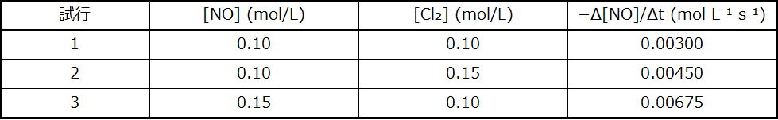
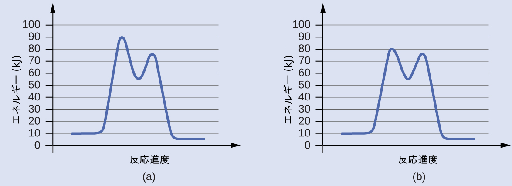

第12章 反応速度論
図12.1 | 日光浴をするアガマトカゲ。その体が温まるにつれ、代謝の化学反応が速くなります。
この章の概要
12.1 化学反応速度
12.2 反応速度に影響を与える要因
12.3 速度則
12.4 積分形速度則
12.5 衝突理論
12.6 反応機構
12.7 触媒作用
はじめに
写真のトカゲは、単に太陽の光を楽しんでいるわけでも、日焼けに勤しんでいるわけでもありません。太陽の光線による熱はトカゲの生存に欠かせないものなのです。温かいトカゲは冷たいトカゲよりも速く動くことができますが、これは温度が高いほど筋肉を動かすための化学反応が速く起こるからです。冷たいトカゲは動きが鈍く、捕食者にとっては簡単な獲物になってしまいます。
ケーキを焼くことから橋梁の耐用寿命を決めることまで、化学反応の速度は、化学的変化を伴うプロセスを理解する上で重要な役割を果たしています。化学反応を起こすことを計画する際には、通常、2つの質問が投げかけられます。1つ目は、「その反応は有用な量で目的の生成物を生成するか?」です。第2の質問は、「反応はどのくらいの速さで起こるか?」です。反応をより詳細に調べるときには、しばしば3つ目の質問が問われます。「反応が起こる際には、どのような特定の分子レベルのプロセスが起こっているのか?」この質問の答えを知ることは、反応の収率や速度を制御する必要がある場合に、実際的な重要性を持っています。
化学的な反応速度論の研究は、2番目と3番目の質問、すなわち、反応が生成物を生成する速度と、反応が発生する分子スケールの方法に関係しています。本章では、化学反応の速度に影響を与える要因、反応が進行する機構、反応が起こる速度を記述するために用いられる定量的手法について検討します
12.1 化学反応速度
この節が終わるまでに、あなたは次のことができるようになります:
•化学反応速度を定義する
•与えられた化学反応についてのバランスの取れた反応式から速度表現を導出する
•実験データから反応速度を計算する
レートとは、ある性質が時間によってどのように変化するかを表す指標です。速度とは、ある物体が与えられた時間内に移動した距離を表す身近なレートです。賃金は、ある人が与えられた時間に働いて得たお金の量を表すレートです。同様に、化学反応のレート(速度)は、与えられた時間内に反応によってどれだけの反応物が消費されたか、またはどれだけの生成物が生成されたかを表す指標です。
反応速度とは、単位時間あたりの反応物や生成物の量の変化のことです。したがって、反応速度は、反応物または生成物の量に関連付けることのできるいくつかの性質の時間依存性を測定することによって決定されます。たとえば、気体状物質を消費または生成する反応の速度は、体積または圧力の変化を測定することによって簡便に決定されます。1つかそれ以上の色のついた物質を含む反応では、光の吸収を測定することで反応速度を監視することができます。水性の電解質が関与する反応では、溶液の導電率の変化を介して反応速度を測定することもできます。
溶液中の反応物や生成物については、反応速度を表現するためにそれらの相対量(濃度)を使用すると便利です。たとえば、水溶液中の過酸化水素(H₂O₂)の濃度は、以下の反応式にしたがって分解することにより、時間の経過とともにゆっくりと変化します:
\[ \rm 2H_2 O_2\ (aq) ⟶ 2H_2 O\ (l) + O_2\ (g) \]
過酸化水素が分解する速度は、ここに示されるように、その濃度の変化の割合として表すことができます:
\[ \begin{eqnarray} \rm H_2 O_2の分解の速度 &=& −\frac{反応物の濃度の変化}{時間の間隔}\\ &=&\rm −\frac{[H_2 O_2]_{t_2} −[H_2 O_2]_{t_1}}{t_2 − t_1}\\ &=&\rm −\frac{Δ[H_2 O_2]}{Δt} \end{eqnarray} \]
種の濃度の経時変化を数学的に表現したものが、反応の速度表現です。角括弧はモル濃度を示し、記号のデルタ(Δ)は「変化」を示しています。したがって、[H₂O₂]t₁はある時刻t₁における過酸化水素のモル濃度を表しており、同様に、[H₂O₂]t₂はそれより後の時刻t₂における過酸化水素のモル濃度を表しています。そして、Δ[H₂O₂]は時間間隔Δt(すなわち、t₂- t₁)の間の過酸化水素のモル濃度の変化を表しています。反応が進むにつれて反応物の濃度は減少するので、Δ[H₂O₂]は負の量です。反応速度は慣例によって正の量であるので、この負の濃度変化に-1を掛けます。図12.2は、H₂O₂の分解中に収集されたデータの例を示しています。
図12.2 | 水溶液中のH₂O₂の分解速度は、H₂O₂の濃度が低下するにつれて減少します。
この分解の結果の表を作成するために、過酸化水素の濃度を 40 °C の一定温度で 6 時間ごとに 1 日かけて測定しました。それぞれの時間間隔について、濃度の変化を対応する時間増分で割ることにより反応速度が計算されます。ここでは、最初の6時間の間隔について示します:
\[ \rm \frac{−Δ[H_2 O_2 ]}{Δt}=\frac{−(0.500\ mol/L − 1.000\ mol/L)}{(6.00\ h − 0.00\ h)}= 0.0833\ mol\ L^{−1}\ h^{−1} \]
反応速度は時間とともに変化し、反応が進むにつれて減少することに注意してください。最後の6時間の間隔の結果から、以下の反応速度が得られます:
\[ \rm \frac{−Δ[H_2 O_2 ]}{Δt}=\frac{−(0.0625\ mol/L − 0.125\ mol/L)}{(24.00\ h − 18.00\ h)}= 0.010\ mol\ L^{−1}\ h^{−1} \]
この振る舞いは、反応が時間とともに絶えず遅くなっていることを示しています。反応速度が変化している期間の開始時と終了時の濃度を使用すると、この時間間隔での反応の平均速度を計算することになります。特定の時間において反応が進行している速度は、その瞬間速度として知られています。反応が始まった「時刻ゼロ」での反応の瞬間速度が、その初期速度です。自動車が停止信号に近づくときに減速するという例えを考えてみましょう。車の初期速度(化学反応の始まりと似ているものです)は、ドライバーがブレーキをかけ始めた瞬間(t₀)にスピードメーターが指している値です。その数秒後には、ある特定の瞬間(t₁としましょう)の瞬間速度は、その時点でのスピードメーターが指している値によって示されるように、やや遅くなっています。時間が経つにつれ、瞬間速度はゼロに到達するまで下がり続け、そのときに車(または反応)が停止します。瞬間速度とは異なり、車の平均速度はスピードメーターでは表示されません。しかし、車の平均速度は、車を完全に停止させるのに必要な時間(Δt)に対する移動距離の比率として計算することができます。減速する車と同様に、化学反応の平均速度は、初期速度と最終速度の間のどこかに収まります。
反応の瞬間速度は、2つの方法のうちの1つで決定することができます。もし非常に短い時間間隔での濃度変化の測定が可能であるような実験条件の場合、前述のように計算された平均速度は、瞬間速度についてのかなり良い近似値を提供します。あるいは、短い時間間隔での測定が可能であれば、図形的な手順を使用して、得られるであろう結果を実質的に手にすることができます。過酸化水素濃度の時間に対するプロットでは、任意の時間tにおけるH₂O₂の瞬間的な分解速度は、その時の曲線に接する直線の傾きによって与えられます(図12.3)。これらの接線の傾きは微積分を用いて値を求めることができますが、それを行う方法は本章の範疇を超えています。
図12.3 | このグラフは、H₂O₂の1.000 M溶液について濃度と時間のプロットを示しています。どこかの時点での速度は、その時点での曲線の接線の傾きの負の値に等しいです。t = 0 h (「初期速度」)とt = 12 h (「12時間での瞬間速度」)での接線が示されています。
日常生活の中の化学
分析における反応速度:尿検査用の試験紙
医師は、患者の尿中のさまざまな物質の量を測定するために、使い捨ての試験紙をしばしば使用します(図12.4)。これらの試験紙には、紙片のさまざまな場所にある小さなパッドに埋め込まれたさまざまな化学試薬が含まれており、それらは特定の物質の十分な濃度にさらされると色が変化します。試験片の使用説明書には、最適な結果を得るためには適切な読み取り時間が重要であると強調されていることがしばしばあります。この読み取り時間の強調は、試験紙上で起こる化学反応の反応速度論的な側面が重要な考慮事項であることを示唆しています。
尿中グルコースの検査は、ここに示される化学反応式によって表される2段階のプロセスに依拠しています:
\[ \rm C_6 H_{12} O_6 + O_2 \xrightarrow{触媒} C_6 H_{10} O_6 + H_2 O_2\\ 2H_2 O_2 + 2I^− \xrightarrow{触媒} I_2 + 2H_2 O + O_2 \]
最初の反応式は、尿中のグルコースが酸化されてグルコノラクトンと過酸化水素が生成される様子を表しています。生成された過酸化水素は、その後、無色のヨウ化物イオンを酸化して茶色のヨウ素を生成します。これは、視覚的に検出することができます。いくつかの紙片には、ヨウ素と反応してより明確な色の変化をもたらす追加の物質が含まれています。
上に示された2つの試験反応は、本質的に非常にゆっくりとしたものですが、試験紙のパッドに埋め込まれた特別な酵素によってその速度が増加します。これは、この章で後述するトピックである触媒作用の一例です。尿に対して使用するための典型的なグルコース試験紙は、発色反応の完了に約30秒を必要とします。あまりにも早く結果を読み取ると、尿サンプルのグルコース濃度が実際よりも低いと結論づけてしまうかもしれません(偽陰性の結果)。色の変化を評価するのに時間がかかりすぎると、尿中に含まれる他の物質によるヨウ化物イオンのよりゆっくりとした(触媒されない)酸化のため、偽陽性になることがあります。
図12.4 | 試験紙は、人の尿中の特定の物質の存在を検出するために一般的に使用されています。多くの試験紙は、1枚の紙片で複数の物質を検出できるように、さまざまな試薬を含む複数のパッドを備えています。(credit: Iqbal Osman)
相対的な反応速度
反応の速度は、任意の反応物または生成物の濃度の変化として表現することができます。どのような所与の反応であっても、これらの反応の速度表現はすべて、反応の化学量論に従ってお互いに単純に関連しています。一般的な反応
\[ \rm aA ⟶ bB \]
の速度は、Aの濃度が低下するという観点から、あるいは、Bの濃度が上昇するという観点から表すことができます。これら2つの速度表現は、反応の化学量論によって関係しています。
\[ \rm 速度 = −\left(\frac{1}{a}\right)\left(\frac{ΔA}{Δt}\right) =\left(\frac{1}{b}\right)\left(\frac{ΔB}{Δt}\right) \]
以下の反応式によって表される反応を考えてみましょう:
\[ \rm 2NH_3\ (g) ⟶ N_2\ (g) + 3H_2\ (g) \]
たとえば、窒素の生成量の観点から表現した反応速度と、アンモニアの消費量の観点から表現した反応速度との間の関係は、以下のようになります:
\[ \rm −\frac{Δmol\ NH_3}{Δt}×\frac{1\ mol\ N_2}{2\ mol\ NH_3}=\frac{Δmol\ N_2}{Δt} \]
これは、化学量論的因子の単位を省略することにより、簡略化された形式で表現されることもあります:
\[ \rm −\frac{1}{2}\frac{Δmol\ NH_3}{Δt}=\frac{Δmol\ N_2}{Δt} \]
2つの量の変化における反対の符号を考慮に入れるために、負の符号が因子として含まれていることに注意してください(反応物の量が減少する一方で、生成物の量が増加します)。均一系反応の場合、反応物と生成物は同じ溶液中に存在し、同じ体積を占めるため、モル量はモル濃度に置き換えることができます:
\[ \rm −\frac{1}{2}\frac{Δ[NH_3]}{Δt}=\frac{Δ[N_2]}{Δt} \]
同様に、H₂の生成速度はN₂の生成速度の3倍になります。なぜなら、生成される1モルのN₂ごとに3モルのH₂が生成されるからです。
\[ \rm \frac{1}{3}\frac{Δ[H_2]}{Δt}=\frac{Δ[N_2]}{Δt} \]
図12.5は、1100°Cでアンモニアが窒素と水素へと分解される際の、時間に対する濃度変化を示しています。t = 500秒における接線の傾きは、反応に関与する3つすべての種から得られる瞬間速度が、それらの化学量論的な因子によって関連しているということを示しています。たとえば、水素の生成速度は、窒素の生成速度の3倍であることが観察されます:
\[ \frac{2.91 × 10^{−6} M/{\rm s}}{9.70 × 10^{−7} M/{\rm s}}≈ 3 \]
図12.5 | 2NH₃ ⟶ N₂ + 3H₂の反応における反応物と生成物の濃度の変化。3つの濃度の変化速度は、t = 500秒における接線の傾きの違いで示されるように、反応の化学量論によって関連しています。
例題12.1 相対的な反応速度の式
硝酸の生成の第一段階は、アンモニアの燃焼です:
\[ \rm 4NH_3\ (g) + 5O_2\ (g) ⟶ 4NO\ (g) + 6H_2 O\ (g) \]
反応物の消費の速度と生成物の生成の速度とを関連付ける式を書いてください。
解法
この均一系反応の化学量論を考慮すると、反応物の消費の速度と生成物の生成の速度は以下のようになります:
\[ \rm −\frac{1}{4}\frac{Δ[NH_3]}{Δt}= −\frac{1}{5}\frac{Δ[O_2]}{Δt}=\frac{1}{4}\frac{Δ[NO]}{Δt}=\frac{1}{6}\frac{Δ[H_2 O]}{Δt} \]
学習内容の確認
Br₂の生成の速度は、以下の正味イオン反応式で表される反応においては、6.0 × 10⁻⁶mol/L/s です:
\[ \rm 5Br^− + {BrO_3}^− + 6H^+ ⟶ 3Br_2 + 3H_2 O \]
反応物の消費の速度と生成物の生成の速度とを関連付ける式を書いてください。
解答:
\[ \rm −\frac{1}{5}\frac{Δ[Br^−]}{Δt}= −\frac{Δ[{BrO_3}^−]}{Δt}= −\frac{1}{6}\frac{Δ[H^+]}{Δt}=\frac{1}{3}\frac{Δ[Br_2]}{Δt}=\frac{1}{3}\frac{Δ[H_2 O]}{Δt} \]
例題12.2 H₂O₂の分解についての反応の速度表現
図12.3のグラフは、H₂O₂の経時的な分解の速度を示しています:
\[ \rm 2H_2 O_2 ⟶ 2H_2 O + O_2 \]
これらのデータに基づくと、t = 11.1 hにおけるH₂O₂の分解の瞬間速度は3.20 × 10⁻²mol/L/hであると決定されます。つまり:
\[ \rm −\frac{Δ[H_2 O_2]}{Δt}= 3.20 × 10^{−2}\ mol\ L^{−1}\ h^{−1} \]
H₂OとO₂の生成の瞬間速度は何ですか?
解法
反応の化学量論は、以下のことを示しています
\[ \rm −\frac{1}{2}\frac{Δ[H_2 O_2]}{Δt}=\frac{1}{2}\frac{Δ[H_2 O]}{Δt}=\frac{Δ[O_2]}{Δt} \]
したがって:
\[ \rm \frac{1}{2}× 3.20 × 10^{−2} mol\ L^{−1}\ h^{−1} =\frac{Δ[O_2]}{Δt}\\ \frac{Δ[O_2]}{Δt}= 1.60 × 10^{−2}\ mol\ L^{−1}\ h^{−1} \]
学習内容の確認
1150 K でのアンモニア(NH₃)の分解速度が2.10 × 10⁻⁶mol/L/sである場合、窒素と水素の生成速度は何ですか?
解答:1.05 × 10⁻⁶mol/L/s(N₂)、および3.15 × 10⁻⁶mol/L/s(H₂)。
12.2 反応速度に影響を与える要因
この節が終わるまでに、あなたは次のことができるようになります:
•化学的性質、物理的状態、温度、濃度、および触媒作用が反応速度へ与える影響について記述する
化学反応中に反応物が消費され、生成物が生成される速度は、大きく異なります。この節では、化学反応の速度に一般的に影響を与える5つの要因について探求していきます:それは、反応する物質の化学的性質、反応物の細分化の状態(1つの大きな塊か、多くの小さな粒子か)、反応物の温度、反応物の濃度、および触媒の存在です。
反応する物質の化学的性質
反応の速度は、関与する物質の性質に依存します。似ているように見える反応でも、反応物の種類によって、同じ条件下で異なる速度を示すことがあります。たとえば、金属の鉄とナトリウムの小片を空気にさらすと、ナトリウムは一晩で空気と完全に反応しますが、鉄はほとんど影響を受けません。活性金属のカルシウムとナトリウムはともに水と反応して水素気体と塩基を形成します。しかし、カルシウムはほどほどの速度で反応するのに対し、ナトリウムはほとんど爆発に近いほど非常に急速に反応します。
反応物の物理的状態
2つかそれ以上の物質間の化学反応では、反応物の間の密接な接触が必要とされます。反応物が異なる物理的状態、すなわち異なる相(固体、液体、気体、溶解)にある場合、反応は相の間の界面でのみ起こります。固相と液体か気体のいずれかの相との間の不均一系反応を考えてみましょう。小さな粒子の反応速度は、大きな固体粒子の反応速度に比べると、より速いものとなるでしょう。なぜなら、他の反応相と接触する表面積が大きいからです。たとえば、大きな鉄片は、細分化された鉄粉よりも酸と反応する速度が遅くなります(図12.6)。大きな木片はくすぶりますが、小さな木片は急速に燃え、のこぎりの屑は爆発的に燃えます。
図12.6 | (a)鉄粉は希薄な塩酸と急速に反応して水素気体の泡を発生させます:2Fe(s) + 6HCl(aq)⟶ 2FeCl₃(aq) + 3H₂(g)。(b)鉄くぎは、酸にさらされる表面積がはるかに少ないため、反応がより遅くなります。
学習へのリンク
このビデオ(http://openstaxcollege.org/l/16cesium)では、スローモーションでのセシウムと水の反応と、反応物の状態と粒子のサイズが反応速度にどのように影響するかについての議論を見ることができます。
反応物の温度
化学反応は一般的に高温になるほど速く起こります。食品は、キッチンカウンターの上に置いたままにしておくと、すぐに腐ってしまいます。しかしながら、そのプロセスは冷蔵庫の中の低温によって遅くなるため、同じ食品でも何日も新鮮さを保つことができます。実験室では、常温でゆっくりと進行する反応の速度を上げるために、しばしばガスバーナー、ホットプレート、オーブンが使用されます。多くの化学プロセスでは、温度を10°C上げると反応速度が約2倍になります。
反応物の濃度
多くの反応の速度は、反応物の濃度に依存します。通常、1つかそれ以上の反応物の濃度が高くなると、反応速度は増加します。たとえば、炭酸カルシウム(CaCO₃)は汚染物質である二酸化硫黄と反応して劣化します。この反応の速度は、大気中の二酸化硫黄の量に依存します(図12.7)。酸性の酸化物である二酸化硫黄は、以下の反応によって、空気中の水蒸気と結合して亜硫酸を生成します:
\[ \rm SO_2\ (g) + H_2 O\ (g) ⟶ H_2 SO_3\ (aq) \]
炭酸カルシウムは亜硫酸と以下のように反応します:
\[ \rm CaCO_3\ (s) + H_2 SO_3\ (aq) ⟶ CaSO_3\ (aq) + CO_2\ (g) + H_2 O\ (l) \]
二酸化硫黄の濃度が高い汚染された大気中では、炭酸カルシウムは、汚染されていない大気中にある場合よりも急速に劣化します。同様に、リンは、酸素が約20%しかない空気中よりも、純粋な酸素雰囲気中の方がはるかに速く燃焼します。
図12.7 | 石灰岩や大理石などの炭酸塩化合物で作られた像は、通常、水の作用と熱膨張・収縮により、時間の経過とともにゆっくりと風化していきます。しかしながら、二酸化硫黄のような汚染物質が風化を促進することがあります。大気汚染物質の濃度が高くなると、石灰岩の劣化はより急速に起こるようになります。(credit: James P Fisher III)
学習へのリンク
リンは空気中では急速に燃焼しますが、酸素濃度が高いとさらに急速に燃焼します。このビデオ(http://openstaxcollege.org/l/16phosphor)で例を見てください。
触媒の存在
過酸化水素(H₂O₂)の比較的希薄な水溶液は、局所的な防腐剤として一般的に使用されています。過酸化水素は分解して、以下の反応式に従って水と酸素気体を生成します:
\[ \rm 2H_2 O_2\ (aq) ⟶ 2H_2 O\ (l) + O_2\ (g) \]
典型的な条件下では、この分解は非常にゆっくりと起こります。しかしながら、開いた傷口に希薄なH₂O₂(aq)を注ぐと、この反応は急速に起こり、酸素気体が勢いよく発生するために溶液は発泡します。この劇的な違いは、創傷部の露出した組織内に、分解プロセスを促進する物質が存在するために生じます。反応速度を高める働きをする物質は触媒と呼ばれます。そのトピックについては、この章の後半で詳しく扱います。
学習へのリンク
化学反応は、分子同士が衝突して化学的な変換を起こすときに発生します。実験室で実際に反応を行う前に、科学者は分子モデリングシミュレーションを使用して、先に議論したパラメータが反応速度にどのように影響するかを予測することができます。PhET反応&速度インタラクティブ(http://openstaxcollege.org/l/16PHETreaction)を使用して、温度、濃度、反応物の性質が反応速度にどのように影響するかを調べてみてください。
12.3 速度則
この節が終わるまでに、あなたは次のことができるようになります:
•速度則の形式と機能を説明する
•反応速度を計算するために速度則を使用する
•速度と濃度のデータを使用して反応の順序を特定し、速度則を導き出す
前の節で説明したように、反応の速度はしばしば反応物の濃度によって影響を受けます。速度則(微分形速度則と呼ばれることもあります)または速度方程式は、化学反応の速度と反応物の濃度との間の関係性を記述する数学的表現です。例として、次の化学反応式で表される反応を考えてみましょう。
\[ {\rm aA + bB ⟶ 生成物} \]
ここでaとbは化学量論的係数です。この反応の速度則は以下のように書かれます:
\[ 速度 = k[{\rm A}]^m [{\rm B}]^n \]
ここで、[A]と[B]は反応物のモル濃度を表し、kは特定の温度での特定の反応に特有の速度定数です。指数mとnは反応次数で、通常は正の整数ですが、分数、負、またはゼロになることもあります。速度定数kと反応次数mとnは、反応物の濃度を変化させると反応速度がどのように変化するかを観察することによって、実験的に決定しなければなりません。速度定数kは反応物の濃度に依存しませんが、温度によって変化します。
速度則の反応次数は、反応物の濃度に対する速度の数学的依存性を記述します。上記の一般的な速度則を参照すると、反応はAに関してはm次、Bに関してはn次です。たとえば、もしm = 1、n = 2の場合、その反応はAが1次、Bが2次です。全反応次数は、それぞれの反応物の次数の単純な和です。ここでの速度則の例では、この反応は全体では3次(1 + 2 = 3)です。この概念をさらに説明するために、いくつかの具体的な例を以下に示します。
速度則:
\[ 速度 = k[{\rm H_2O_2}] \]
は、過酸化水素が1次であり、全体として1次である反応を記述しています。 速度則:
\[ 速度 = k[{\rm C_4H_6}]^2 \]
は、C₄H₆が2次であり、全体として2次である反応を記述しています。 速度則:
\[ 速度 = k[{\rm H^+}][{\rm OH^-}] \]
は、H⁺が1次、OH⁻が1次であり、全体として2次である反応を記述しています。
例題12.3 反応次数から速度則を書く
ある実験では、二酸化窒素と一酸化炭素の反応:
\[ {\rm NO_2\ (g) + CO\ (g) ⟶ NO\ (g) + CO_2\ (g)} \]
は、100°CでNO₂が2次、COが0次であることを示しています。この反応の速度則は何ですか?
解法
この反応は次のような形になります:
\[ 速度 = k[{\rm NO_2}]^m [{\rm CO}]^n \]
この反応はNO₂が2次で、したがってm = 2です。この反応はCOが0次で、したがってn = 0です。 速度則は以下のようになります
\[ 速度 = k[{\rm NO_2}]^2 [{\rm CO}]^0 = k[{\rm NO_2}]^2 \]
ある数を0乗すると1に等しくなり、したがって[CO]⁰ = 1であることを思い出してください。これが、COの濃度の項が速度則から省略されることがある理由です:反応の速度はNO₂の濃度にのみ依存しています。反応機構についての後の章では、反応に関与しているにもかかわらず、ある反応物の濃度が反応速度に影響を与えない場合があることを説明します。
学習内容の確認
反応:
\[ {\rm H_2\ (g) + 2NO\ (g) ⟶ N_2 O\ (g) + H_2 O\ (g)} \]
の速度則は、速度 = k[NO]²[H₂]と決定されています。それぞれの反応物の次数は何で、反応の全体の次数は何ですか?
解答:NOの次数=2、H₂の次数=1、全体の次数=3
学習内容の確認
エステル交換反応では、トリグリセリドがアルコールと反応してエステルとグリセロールを生成します。多くの学生は、バイオディーゼルを生成する化学反応を学ぶ前に、メタノール(CH₃OH)と酢酸エチル(CH₃CH₂OCOCH₃)の反応をサンプル反応として学習します:
\[ {\rm CH_3 OH + CH_3 CH_2 OCOCH_3 ⟶ CH_3 OCOCH_3 + CH_3 CH_2 OH} \]
メタノールと酢酸エチルとの反応の速度則は、ある条件下では、以下のように決定されます:
\[ 速度 = k[{\rm CH_3OH}] \]
メタノールと酢酸エチルに関する反応次数は何ですか?全体の反応次数は何ですか?
解答:CH₃OHの次数=1、CH₃CH₂OCOCH₃の次数=0、全体の次数=1
速度則を決定するための一般的な実験アプローチは、初期速度法です。この方法では、初期反応物の異なる濃度を用いて複数の実験試行を行い、反応速度を測定します。これらの試行について測定された速度を比較することで、反応次数を決定することができ、その結果として速度定数を決定することができます。それらを一緒に使用して、速度則を定式化します。このアプローチについて、次の2つの例題で説明します。
例題12.4 初期速度から速度則を決定する
上層大気中のオゾンは、窒素酸化物と反応して減少します。窒素酸化物とオゾンの反応速度は、これらの反応が南極上空のオゾンホール(図12.8)の形成にとってどれだけ重要であるかを決定する際の重要な要素です。そのような反応の1つは、一酸化窒素(NO)とオゾン(O₃)の結合です:
\[ {\rm NO\ (g) + O_3\ (g) ⟶ NO_2\ (g) + O_2\ (g)} \]
図12.8 | 成層圏のオゾン濃度と春の季節に南極上空に発生する「オゾンホール」を示す等値線図。(credit: modification of work by NASA)
この反応を実験室で観察し、25°Cにおいて以下の速度のデータが決定されました。
25 °Cでのこの反応の速度則と速度定数を決定してください。
解法
速度則は以下のような形になります:
\[ 速度 = k[{\rm NO}]^m [{\rm O_3}]^n \]
以下の3段階のプロセスを使用して、実験データからm、n、kの値を決定します:
ステップ1.[NO]が変化し、[O₃]が一定の場合のデータからmの値を決定します。最後の3つの実験では、[NO]は変化していますが、[O₃]は一定のままです。[NO]が試行3から試行4で2倍になると、速度は2倍になり、[NO]が試行3から試行5で3倍になると、速度もまた3倍になります。したがって、速度も[NO]に正比例しており、速度則のmは1に等しいです。
ステップ2.[O₃]が変化し、[NO]が一定の場合のデータからnの値を決定します。最初の3つの実験では、[NO]は一定であり、[O₃]が変化しています。反応速度は[O₃]の変化に正比例して変化しています。[O₃]が試行1から試行2で2倍になると、速度は2倍になり、[O₃]が試行1から試行3で3倍になると、速度もまた3倍になります。したがって、速度は[O₃]に正比例し、nは1に等しいです。したがって速度則は:
\[ 速度 = k[{\rm NO}]^1 [{\rm O_3}]^1 = k[{\rm NO}][{\rm O_3}] \]
ステップ3. 濃度の1つの組からkの値を決定し、対応する速度を決定します。以下では、試行1のデータを使用します:
\[ \begin{eqnarray} k &=&\frac{速度}{\rm [NO][O_3]}\\ &=&\rm \frac{6.60 × 10^{−5}\ mol\ L^{−1}\ s^{−1}}{(1.00 × 10^{−6}\ mol\ L^{−1})(3.00 × 10^{−6}\ mol\ L^{−1})}\\ &=&\rm 2.20 × 10^7\ L\ mol^{−1}\ s^{−1} \end{eqnarray} \]
学習内容の確認
アセトアルデヒドは加熱すると分解して、以下の反応式に従ってメタンと一酸化炭素を生成します:
\[ \rm CH_3 CHO\ (g) ⟶ CH_4\ (g) + CO\ (g) \]
以下の実験データから、この反応の速度則と速度定数を決定してください:
解答:速度 = k[CH₃CHO]²で、k = 6.73 × 10⁻⁶ L/mol/s
例題12.5 初期速度から速度則を決定する
初期速度法と実験データを用いて、この反応の速度則と速度定数の値を決定してください:
\[ \rm 2NO\ (g) + Cl_2\ (g) ⟶ 2NOCl\ (g) \]

解法
この反応の速度則は以下のような形になります:
\[ 速度 = k[{\rm NO}]^m [{\rm Cl_2}]^n \]
例題12.4と同様に、実験データから m と n の値を決定し、これらの値を使用して k の値を決定するという段階的な方法でこの問題にアプローチしてください。しかしながら、この例題では、明示的な代数的アプローチ(前の例題の黙示的なアプローチとは異なります)を使用して、m と nの値を決定します:
ステップ 1.[NO]が変化し、[Cl₂]が一定の場合のデータからmの値を決定します。2つの異なる試行からのデータを示すために、添え字xとyを使って比率を書きます:
\[ \frac{速度_x}{速度_y}=\frac{k[{\rm NO}]_x^m [{\rm Cl_2}]_x^n}{k[{\rm NO}]_y^m [{\rm Cl_2}]_y^n} \]
[Cl₂]が変化しない試行3と試行1を使用すると、以下が得られます:
\[ \frac{速度_3}{速度_1}=\frac{0.00675}{0.00300}=\frac{k(0.15)^m (0.10)^n}{k(0.10)^m (0.10)^n} \]
分子と分母の等価な項を相殺すると、以下が残ります:
\[ \frac{0.00675}{0.00300}=\frac{(0.15)^m}{(0.10)^m} \]
これを単純化すると、以下のようになります:
\[ 2.25 = (1.5)^m \]
指数mの値を決定するために対数を使用します:
\[ \begin{eqnarray} \ln(2.25) &=& m\ln(1.5)\\ \frac{\ln(2.25)}{\ln(1.5)}&=& m\\ 2 &=& m \end{eqnarray} \]
結果を確認します
\[ 1.5^2 = 2.25 \]
ステップ2.[Cl₂]が変化し、[NO]が一定の場合のデータからnの値を決定します。
\[ \frac{速度_2}{速度_1}=\frac{0.00450}{0.00300}=\frac{k(0.10)^m (0.15)^n}{k(0.10)^m (0.10)^n} \]
相殺すると、以下が得られます:
\[ \frac{0.0045}{0.0030}=\frac{(0.15)^n}{(0.10)^n} \]
これを単純化すると、以下のようになります:
\[ 1.5 = (1.5)^n \]
したがって、nは1でなければならず、速度則の形は以下のようになります:
\[ 速度 = k[{\rm NO}]^m [{\rm Cl_2}]^n = k[{\rm NO}]^2 [{\rm Cl_2}] \]
ステップ3.速度定数kの数値を適切な単位で決定します。反応速度の単位はmol/L/sです。kの単位は、速度則の式に代入して速度の適切な単位を得るために必要なものであれば何でもかまいません。この例では、濃度の単位は mol³/L³です。速度がmol/L/s であるためには、kの単位は、mol⁻² L²/s とする必要があります。速度則の式を解明した後にkの値を決定するには、単純に実験の第1の試行からの値をあてはめて、kについて解きます:
\[ \begin{eqnarray} \rm 0.00300\ mol\ L^{−1}\ s^{−1} &=& k \rm (0.10\ mol\ L^{−1})^2 (0.10\ mol\ L^{−1})^1\\ k &=&\rm 3.0\ mol^{−2}\ L^2\ s^{−1} \end{eqnarray} \]
学習内容の確認
与えられた初期速度のデータを使用して、以下の反応式の反応の速度則を導出してください:
\[ {\rm OCl^−\ (aq) + I^−\ (aq) ⟶ OI^−\ (aq) + Cl^−\ (aq)} \]
この反応の速度則の式と、適切な単位での速度定数kの値を決定してください。
解答:
\[ \begin{eqnarray} \frac{速度_2}{速度_3}=\frac{0.00092}{0.00046}&=&\frac{k(0.0020)^x (0.0040)^y}{k(0.0020)^x (0.0020)^y}\\ 2.00 &=& 2.00^y\\ y &=& 1\\ \frac{速度_1}{速度_2}=\frac{0.00184}{0.00092}&=&\frac{k(0.0040)^x (0.0020)^y}{k(0.0020)^x (0.0040)^y}\\ 2.00 &=&\frac{2^x}{2^y}\\ 2.00 &=&\frac{2^x}{2^1}\\ 4.00 &=&2^x\\ x &=&2\\ \end{eqnarray} \]
試行1の濃度データを代入してkについて解くと、以下が得られます:
\[ \begin{eqnarray} 速度 &=& k[{\rm OCl^−}]^2 [{\rm I^−}]^1\\ 0.00184 &=& k(0.0040)^2 (0.0020)^1\\ k &=& \rm 5.75 × 10^4\ mol^{−2}\ L^2\ s^{−1}\\ \end{eqnarray} \]
反応次数と速度定数の単位
いくつかの例では、速度則の反応次数がたまたまその反応の化学反応式の係数と同じになっていることがあります。これは単なる偶然の一致であり、そうではないことが非常に多いです。
反応物によっては速度則が小数の次数を示すことがあり、ある反応物の濃度を上げると反応速度が低下する場合に負の反応次数が観察されることがあります。これらの点を説明するいくつかの例を示します:
\[ \begin{eqnarray} {\rm NO_2 + CO ⟶ NO + CO_2} \hspace{20pt} 速度 &=& k[{\rm NO_2}]^2\\ {\rm CH_3 CHO ⟶ CH_4 + CO} \hspace{20pt} 速度 &=& k[{\rm CH_3 CHO}]^2\\ {\rm 2N_2 O_5 ⟶ 2NO_2 + O_2} \hspace{20pt} 速度 &=& k[{\rm N_2 O_5}]\\ {\rm 2NO_2 + F_2 ⟶ 2NO_2 F} \hspace{20pt} 速度 &=& k{\rm [NO_2][F_2]}\\ {\rm 2NO_2 Cl ⟶ 2NO_2 + Cl_2} \hspace{20pt} 速度 &=& k[{\rm NO_2 Cl}]\\ \end{eqnarray} \]
速度則は実験によってのみ決定され、反応の化学量論によって確実に予測されるものではないことに注意しておくことが重要です。
速度定数の単位は反応の全体の次数に合わせて適宜変化します。例題12.4に記載された2次の反応の速度定数の単位はL mol⁻¹ s⁻¹であると決定されました。例題12.5に記載された3次の反応では、kの単位はL² mol⁻² s⁻¹であると導き出されました。次元解析によると、全体の次数がxである反応の速度定数の単位はLˣ⁻¹ mol¹⁻ˣ s⁻¹ とする必要があります。表12.1は、一般的な反応次数の速度定数の単位をまとめています。
表12.1
この表の単位は、濃度 (mol/L) と時間 (s) の特定の単位を使用して導出されていることに注意してください(ただし、これらの2つの性質については、どのような妥当な単位も使われることがあります)。
12.4 積分形速度則
この節が終わるまでに、あなたは次のことができるようになります:
•積分形速度則の形式と機能を説明する
•0次、1次、2次反応について積分形速度則の計算を行う
•半減期を定義し、関連する計算を行う
•濃度/時間データから反応の次数を特定する
これまでに議論された速度則は、速度と反応物の濃度とを関係付けるものです。私たちはまた、反応物の濃度と時間とを関連付けるような、それぞれの速度則の第2の形式を決定することができます。これらは積分形速度則と呼ばれています。私たちは積分形速度則を使用して、一定期間後に存在する反応物や生成物の量を決定したり、反応がある程度まで進行するのに必要な時間を推定したりすることができます。たとえば、放射性物質が安全なレベルまで放射能を減衰させるために保存しなければならない時間の長さを決定するために、積分形速度則が使用されます。
微積分を用いて、ある化学反応の微分形速度則を時間に関して積分し、反応混合物中に存在する反応物または生成物の量と反応の経過時間とを関連付ける式を与えることができます。このプロセスは、微分形速度則の複雑さに応じて、非常に簡単なものから非常に複雑なものまであります。議論の目的のために、私たちは1次、2次、および0次の反応についての結果として得られる積分形速度則に焦点を当てます。
1次反応
単純な1次反応についての速度則(速度 = k[A])を積分すると、反応物の濃度が時間とともにどのように変化するかを記述する式が得られます:
\[ [{\rm A}]_t = [{\rm A}]_0 e^{−kt} \]
ここで、[A]ₜは任意の時間tにおけるAの濃度であり、[A]₀はAの初期濃度であり、kは1次速度定数です。
数学的な簡便性のために、この式は、正の比例と負の比例を含む他の形式に再整理することができます:
\[ \ln \left(\frac{[{\rm A}]_t}{[{\rm A}]_0}\right)= -kt\hspace{10pt} または\hspace{10pt} \ln\left(\frac{[{\rm A}]_0}{[{\rm A}]_t}\right)= kt \]
また、時間に対する濃度の線形依存性を示す形式に再整理することもできます:
\[ \ln[{\rm A}]_t = \ln[{\rm A}]_0 −kt \]
例題12.6 1次反応についての積分形速度則
500 °CでのシクロブタンC₄H₈の1次分解の速度定数は 9.2 × 10⁻³s⁻¹です:
\[ \rm C_4 H_8 ⟶ 2C_2 H_4 \]
C₄H₈の試料の80.0%が分解するまでにどれだけの時間がかかりますか?
解法
反応物の濃度の相対的な変化が与えられているので、積分形速度則の簡便な形式は以下のものです:
\[ \ln \left(\frac{[{\rm A}]_0}{[{\rm A}]_t}\right)= kt \]
C₄H₈の初期濃度[A]₀は与えられていませんが、試料の80.0%が分解するという記載は、この問題を解くのに十分な情報です。xを初期濃度とすると、80.0%が分解した後の濃度は x の 20.0% すなわち0.200x となります。tを分離するために速度則を再配置して、与えられた量を代入すると、以下が得られます:
\[ \begin{eqnarray} t &=& \ln\frac{[x]}{[0.200x]}×\frac{1}{k}\\ &=& \ln\ 5 ×\frac{1}{\rm 9.2 × 10^{−3}\ s^{−1}}\\ &=& 1.609 ×\frac{1}{\rm 9.2 × 10^{−3}\ s^{−1}}\\ &=& \rm 1.7 × 10^2\ s \end{eqnarray} \]
学習内容の確認
ヨウ素-131は放射性同位体であり、いくつかの形態の甲状腺がんの診断と治療に使用されます。ヨウ素-131は、以下の式に従ってキセノン-131に崩壊します:
\[ \rm I-131 ⟶ Xe-131 + 電子 \]
崩壊は1次であり、速度定数は 0.138 d⁻¹です。ヨウ素-131の0.500M溶液中において、この物質の90%がXe-131に崩壊するのに何日かかりますか?
解答:16.7日
次の例題の演習では、積分形速度則の線形形式が便利です:
\[ \begin{eqnarray} \ln[{\rm A}]_t &=& (−k)(t) + \ln[{\rm A}]_0\\ y &=& mx + b \end{eqnarray} \]
1次反応でのtに対するln[A]ₜのプロットは、-kの傾きとln[A]₀のy切片を持つ直線となります。ある一組の速度データをこのようにプロットしても直線にならない場合、その反応はAの1次反応ではありません。
例題12.7 反応次数と速度定数をグラフから決定する
図12.2のデータは、時間に対してln[H₂O₂]をグラフ化することにより、1次速度則で表現することができることを示してください。これらのデータから、H₂O₂の分解の速度定数を決定してください。
解法
図12.2のデータは、以下の表にされています。そして、ln[H₂O₂]のプロットは図12.9に示されています。
図12.9 | ln[H₂O₂]と時間の間の線形の関係性は、過酸化水素の分解が1次反応であることを示唆しています。
時間に対するln[H₂O₂]のプロットは直線的であり、この反応は1次の速度則で記述されるかもしれないことを示しています。
1次の積分形速度則の線形形式によると、速度定数はこのプロットの傾きの負の値によって与えられます。
\[ 傾き =\frac{yの変化}{xの変化} =\frac{Δy}{Δx}=\frac{Δ\ln [{\rm H_2 O_2}]}{Δt} \]
この線の傾きは、異なるtの値における2つのln[H₂O₂]の値から導き出すこともできます(線の両端付近に1つずつあることが好ましいです)。たとえば、tが0.00 hのときのln[H₂O₂]の値は0.000であり、t = 24.00 hのときの値は-2.772です。
\[ \begin{eqnarray} 傾き &=&\rm \frac{−2.772−0.000}{24.00 − 0.00\ h}\\ &=&\rm \frac{−2.772}{24.00\ h}\\ &=&\rm −0.116\ h^{−1} \end{eqnarray}\\ k = −傾き = \rm −(−0.116\ h^{−1}) = 0.116\ h^{−1} \]
学習内容の確認
以下のデータをグラフにして、反応A ⟶ B + Cが1次であるかどうかを決定してください。
解答:tに対するln[A]ₜのプロットは直線的ではなく、この反応が1次ではないことを示しています:
2次反応
反応物の濃度と2次反応の速度定数を関連付ける式はかなり複雑になることがあります。複雑さを最小限に抑えてポイントを説明するために、ここでは最も単純な2次反応、すなわち、その速度がただ1つの反応物の濃度に依存するものだけを説明します。これらのタイプの反応では、微分形速度則は以下のように書かれます:
\[ 速度 = k[{\rm A}]^2 \]
これらの2次反応については、積分形速度則は以下のようになります:
\[ \frac{1}{[{\rm A}]_t}= kt +\frac{1}{[{\rm A}]_0} \]
ここで、式の中の項は先に定義したとおりの通常の意味を持っています。
例題12.8 2次反応の積分形速度則
ブタジエン気体(C₄H₆)からC₈H₁₂気体が得られる反応は、以下の反応式で表されます:
\[ {\rm 2C_4 H_6\ (g) ⟶ C_8 H_{12}\ (g)} \]
この「二量化」反応は、ある条件下で5.76×10⁻²L mol⁻¹ min⁻¹に等しい速度定数を持つ2次反応です。ブタジエンの初期濃度が0.200Mの場合、10.0分後の濃度は何ですか?
解法
2次反応の場合、積分形速度則は以下のように書かれます。
\[ \frac{1}{[{\rm A}]_t}= kt +\frac{1}{[{\rm A}]_0} \]
この式では、3つの変数がわかっています:[A]₀ = 0.200 mol/L、k = 5.76 × 10⁻²L/mol/min、t = 10.0 minです。したがって、私たちは4番目の変数である[A]について解くことができます:
\[ \begin{eqnarray} \frac{1}{[{\rm A}]_t}&=&\rm (5.76 × 10^{−2}\ L\ mol^{−1}\ min^{−1})(10\ min) +\frac{1}{0.200\ mol^{−1}}\\ \frac{1}{[{\rm A}]_t}&=&\rm (5.76 × 10^{−1}\ L\ mol^{−1}) + 5.00\ L\ mol^{−1}\\ \frac{1}{[{\rm A}]_t}&=&\rm 5.58\ L\ mol^{−1}\\ [{\rm A}]_t &=&\rm 1.79 × 10^{−1}\ mol\ L^{−1} \end{eqnarray} \]
したがって、10.0分が経過したときには、元々存在した0.200mol/Lに対して、0.179mol/Lのブタジエンが残っていることになります。
学習内容の確認
ブタジエンの初期濃度が0.0200Mの場合、20.0分後の残りの濃度は何ですか?
解答:0.0195 mol/L
2次反応の積分形速度則は直線の方程式の形をしています:
\[ \begin{eqnarray} \frac{1}{[{\rm A}]_t}&=& kt +\frac{1}{[{\rm A}]_0}\\ y &=& mx + b \end{eqnarray} \]
2次反応でのtに対する1/[A]ₜのプロットは、kの傾きと1/[A]₀のy切片を持つ直線となります。このプロットが直線でない場合、反応は2次ではありません。
例題12.9 反応次数と速度定数をグラフから決定する
以下のデータは、例題12.8で記述した反応と同じ反応についてのものです。反応が1次であるか2次であるかを特定するために、2つの適切なデータプロットを作成して比較してください。反応次数を特定した後、速度定数の値を推定してください。
解法
1次反応と2次反応を区別するために、tに対するln[C₄H₆]ₜのプロットを用意し、tに対する1/[C₄H₆]ₜのプロットと比較します。このプロットに必要な値は以下の通りです。
図12.10にプロットが示されています。これは、tに対するln[C₄H₆]ₜのプロットが明らかに直線的ではないことを示しており、したがってこの反応は1次ではありません。tに対する1/[C₄H₆]ₜのプロットは直線的であり、反応が2次であることを示しています。
図12.10 | これら2つのグラフはC₄H₆の二量化についての1次と2次のプロットを示しています。2次プロット(右側)における直線的な傾向は、この反応が2次の反応速度論に従っていることを示しています。
2次の積分形速度則によれば、速度定数はtに対する1/[A]ₜのプロットの傾きに等しいです。t = 0秒とt = 6200秒のデータを用いて、速度定数は以下のように推定されます:
\[ k = 傾き =\frac{(481\ M^{−1} − 100\ M^{−1})}{\rm (6200\ s − 0\ s)}= 0.0614\ M^{−1}\ \rm s^{−1} \]
学習内容の確認
以下のデータは2次の速度則に当てはまるでしょうか?
解答:はい。tに対する1/[A]ₜのプロットは線形です。
0次反応
0次反応の場合、微分形速度則は以下のようになります:
\[ 速度 = k \]
したがって、0次の反応は、反応物の濃度に関係なく、一定の反応速度を示します。これは直感に反するように見えるかもしれません。なぜなら、反応物の濃度がゼロの場合には、反応速度が有限になることは確実にありえないからです。この入門教科書の目的のためには、いくつかの反応についての0次の反応速度論は、ある特定の条件下でのみ観察されるということに注意しておけば十分でしょう。これらの同じ反応は、特定の条件が満たされていない場合、異なる反応速度論的な振る舞いを示します。この理由から、より慎重に擬0次という用語が使用されることがあります。
0次反応のための積分形速度則は、線形関数です:
\[ \begin{eqnarray} [{\rm A}]_t &=& −kt + [{\rm A}]_0\\ y &=& mx + b \end{eqnarray} \]
0次反応でのtに対する[A]ₜのプロットは、-kの傾きと[A]₀のy切片を持つ直線となります。図12.11は、加熱された2種類の固体表面でのアンモニアの熱分解反応について、tに対する[NH₃]のプロットを示しています。この分解反応は、石英(SiO₂)表面では、時間に対する濃度のプロットが指数関数的に減衰していることから示唆されるように、1次的な振る舞いを示しています。しかしながら、タングステンの表面では、プロットは線形であり、0次の反応速度論を示しています。
例題12.10 0次速度定数をグラフから決定する
図12.11のデータのプロットを使用して、タングステン表面でのアンモニア分解の0次速度定数をグラフから推定してください。
解法
0次の反応速度論での積分形速度則は、速度定数の負の値-kに等しい傾きを持つ、時間tに対する反応物濃度[A]ₜの線形プロットとして記述されます。前の例題の数学的アプローチに従って、線形のデータプロット(タングステン上での分解についてのもの)の傾きを、グラフから推定します。t = 0 と t = 1000 s でのアンモニア濃度を用いると:
\[ k = −傾き =\rm −\frac{(0.0015\ mol\ L^{−1} − 0.0028\ mol\ L^{−1})}{(1000\ s − 0\ s)}= 1.3 × 10^{−6} mol\ L^{−1}\ s^{−1} \]
学習内容の確認
図12.11の0次プロットは、初期アンモニア濃度0.0028 mol L⁻¹が1000秒の間、時間とともに線形に減少していることを示しています。この0次の振る舞いに変化がないと仮定すると、どの時間(分)に濃度が0.0001 mol L⁻¹に達するでしょうか?
解答:35分
図12.11 | タングステン(W)表面でのNH₃の分解は0次反応ですが、 石英(SiO₂)表面では1次反応です。
反応の半減期
反応の半減期t1/2とは、ある量の反応物の半分が消費されるのに必要な時間のことです。一連の半減期のそれぞれにおいて、反応物の残っている濃度の半分が消費されます。過酸化水素の分解(図12.2)を例にとると、第1半減期(0.00時間から6.00時間)の間にH₂O₂濃度が1.000Mから0.500Mに減少していることがわかります。また、第2半減期(6.00時間から12.00時間)の間に、濃度は0.500Mから0.250Mに減少し、第3半減期の間に、濃度は0.250Mから0.125Mに減少しています。一連の6.00時間の期間のそれぞれにおいて、H₂O₂の濃度は半分に減少しています。過酸化水素の分解は1次反応であり、示されているように、1次反応の半減期は反応物の濃度に依存しません。しかしながら、他の次数の反応の半減期は反応物の濃度に依存します。
1次反応
1次反応の半減期とその速度定数とを関係付ける式は、以下のように積分形速度則から導き出されます:
\[ \begin{eqnarray} \ln\frac{[{\rm A}]_0}{[{\rm A}]_t}&=& kt\\ t &=& \ln\frac{[{\rm A}]_0}{[{\rm A}]_t}×\frac{1}{k} \end{eqnarray} \]
t1/2で表される半減期の定義を想起すると、この時点でのAの濃度は初期濃度の半分である必要があります: t = t1/2、[A]ₜ = 1/2 [A]₀。
これらの項を並べ替えた積分形速度則に代入して単純化すると、半減期の式が得られます:
\[ \begin{eqnarray} t_{1/2} &=& \ln\frac{[{\rm A}]_0}{\frac{1}{2} [{\rm A}]_0}×\frac{1}{k}\\ &=& \ln2 ×\frac{1}{k}\\ &=& 0.693 ×\frac{1}{k}\\ t_{1/2} &=&\frac{0.693}{k}\\ \end{eqnarray} \]
この式は、反応の半減期とその速度定数kの間の予想される逆相関の関係を記述しています。速い反応ほど速度定数が大きく、それに応じて半減期が短くなります。遅い反応は速度定数が小さく、半減期が長くなります。
例題12.11 半減期を用いた1次速度定数の計算
図12.12で与えられたデータを用いて、40°Cでの水中の過酸化水素の1次分解の速度定数を計算してください。
図12.12 | 40°CでのH₂O₂の分解(2H₂O₂ ⟶ 2H₂O + O₂)が示されています。色の濃さは示された時間におけるH₂O₂の濃度を表していますが、実際にはH₂O₂は無色です。
解法
図12.12の濃度/時間データを見ると、H₂O₂の分解の半減期は 2.16 × 10⁴s であることがわかります:
\[ t_{1/2} =\frac{0.693}{k}\\ k =\frac{0.693}{t_{1/2}}=\frac{0.693}{\rm 2.16 × 10^4\ s}= \rm 3.21 × 10^{−5}\ s^{−1} \]
学習内容の確認
ヨウ素-131の1次放射性崩壊は0.138 d⁻¹の速度定数を示します。この崩壊の半減期は何ですか?
解答:5.02日
2次反応
1次反応で用いたものと同様の方法で、2次反応の半減期とその速度定数および初期濃度とを関係付ける式を、その積分形速度則から導出することができます:
\[ \frac{1}{[{\rm A}]_t}= kt +\frac{1}{[{\rm A}]_0}\\ または\\ \frac{1}{[{\rm A}]_t}−\frac{1}{[{\rm A}]_0}= kt \]
tをt1/2に制限します。
\[ t = t_{1/2} \]
[A]ₜを[A]₀の半分と定義します。
\[ [{\rm A}]_t =\frac{1}{2} [{\rm A}]_0 \]
それらを積分形速度則に代入して単純化します:
\[ \begin{eqnarray} \frac{1}{\frac{1}{2} [{\rm A}]_0}−\frac{1}{[{\rm A}]_0}&=& kt_{1/2}\\ \frac{2}{[{\rm A}]_0}−\frac{1}{[{\rm A}]_0}&=& kt_{1/2}\\ \frac{1}{[{\rm A}]_0}&=& kt_{1/2}\\ t_{1/2} &=&\frac{1}{k[{\rm A}]_0} \end{eqnarray} \]
2次反応ではt1/2は反応物の濃度に反比例し、反応が進むにつれて反応物の濃度が低下するため半減期が長くなります。2次反応の速度定数は、1次反応とは異なり、初期濃度がわからないと半減期から直接計算することはできません。
0次反応
他の反応次数については、積分形速度則から0次半減期の式を導出することができます:
\[ [{\rm A}] = −kt + [{\rm A}]_0 \]
時間と濃度を半減期で定義されたものに制限します:t = t1/2 と [A] = (1/2)[A]₀です。これらの項を0次積分形速度則に代入すると、以下が得られます:
\[ \begin{eqnarray} \frac{[{\rm A}]_0}{2}&=& −kt_{1/2} + [{\rm A}]_0\\ kt_{1/2} &=&\frac{[{\rm A}]_0}{2}\\ t_{1/2} &=&\frac{[{\rm A}]_0}{2k}\\ \end{eqnarray} \]
すべての反応次数と同様に、0次反応の半減期はその速度定数に反比例します。しかしながら、0次反応の半減期は、初期濃度が高くなるにつれて増加します。
微分形および積分形の速度則の式と0次、1次、2次反応の対応する半減期が、表12.2にまとめられています。
表12.2
例題12.12 0次反応と2次反応の半減期
例題12.8で記述されたブタジエンの二量化反応の半減期(分)は何ですか?
解法
問題としている反応は2次であり、0.200 mol L⁻¹の反応溶液で開始され、0.0576 L mol⁻¹ min⁻¹の速度定数を示します。これらの量を2次半減期の式に代入すると:
\[ t_{1/2}=\rm \frac{1}{[(0.0576\ L\ mol^{−1}\ min^{−1})(0.200\ mol\ L^{−1})]}=86.8\ min \]
学習内容の確認
タングステン上でのアンモニアの熱分解の半減期(分)は何ですか?(図12.11を参照)
解答:18分
12.5 衝突理論
この節が終わるまでに、あなたは次のことができるようになります:
•衝突理論の仮定を使用して、物理的な状態、温度、濃度が反応速度に与える影響を説明する
•活性化エネルギーと遷移状態の概念を定義する
•速度定数と温度の関係を計算する際にアレニウスの式を使用する
私たちは、原子、分子、またはイオンが反応する前にお互いに衝突しなければならないということに驚くべきではないでしょう。原子は化学結合を形成するためには、近くになければなりません。この単純な前提は、反応速度に影響を与える要因を含む化学的反応速度論に関する多くの観測を説明する非常に強力な理論の基礎となっています。
衝突理論は、以下のような仮定に基づいています:
- 反応の速度は、反応物の衝突の割合に比例しています:
\[ 反応速度 ∝\frac{衝突の数}{時間} \]
反応種は、生成物の中で一緒に結合することになる原子間の接触を可能にするような向きで衝突しなければなりません。
衝突は、電子が再配置し、新しい結合(と新しい化学種)を形成することができるように、反応種の原子価殻の相互の貫入を可能にするのに十分なエネルギーを伴って発生しなければなりません。
私たちは、一酸化炭素と酸素の反応を考えてみることによって、衝突の方向とエネルギーという仮定2および3に記載された2つの物理的要因の重要性を理解できます:
\[ \rm 2 CO\ (g) + O_2\ (g) ⟶ 2 CO_2\ (g) \]
一酸化炭素は、炭化水素燃料の燃焼により発生する汚染物質です。この汚染物質を減らすために、自動車には触媒を使ってこの反応を行う触媒コンバーター[排出ガス浄化装置]が搭載されています。これはまた、火薬の燃焼の副反応でもあり、多くの銃器の銃口の火花を引き起こします。一酸化炭素と酸素が十分な量で存在すれば、高温高圧でこの反応が起こります。
一酸化炭素と酸素の間での気相反応の最初のステップは、2つの分子の衝突です:
\[ \rm CO\ (g) + O_2\ (g) ⟶ CO_2\ (g) + O\ (g) \]
2つの分子がお互いに対して相対的に持つことができる向きの可能性はたくさんありますが、図12.13に示される2つの場合を考えてみましょう。1つ目のケースでは、一酸化炭素分子の酸素側が酸素分子に衝突します。2つ目のケースでは、一酸化炭素分子の炭素側が酸素分子に衝突します。第2のケースでは、二酸化炭素(中心の炭素原子が2個の酸素原子に結合している:O=C=O)が生成される可能性が明らかに高いです。これは、衝突の向きが反応の目的とする生成物を生成する上でいかに重要であるかを示す非常に簡単な一例です。
図12.13 | 一酸化炭素分子と酸素分子の間で起こる可能性のある2つの衝突を図示しています。衝突する分子の向きによって、2つの分子間で反応が起こるかどうかが部分的に決まります。
もし衝突が正しい向きで起きたとしても、反応が進行して二酸化炭素が生成される保証はまだありません。衝突の向きが適切であることに加えて、衝突は生成物を生成するのに十分なエネルギーを伴って発生しなければなりません。反応種が適切な向きと十分なエネルギーの両方で衝突すると、それらが結合して活性錯体または遷移状態と呼ばれる不安定な種を形成します。これらの種は非常に短命で、通常、ほとんどの分析機器では検出できません。いくつかの場合では、洗練されたスペクトル測定が遷移状態の観察に使用されています。
衝突理論は、濃度が高くなるにつれてほとんどの反応速度が増加する理由を説明します。反応する物質の濃度が高くなると、単位体積あたりの分子の数が増えるため、分子間の衝突の可能性が高まります。衝突が多いということは、(衝突のエネルギーが適切であると仮定すると)反応速度が速くなることを意味します。
活性化エネルギーとアレニウスの式
反応物同士の衝突時に生成物を形成するのに必要な最小エネルギーは、活性化エネルギー(Eₐ)と呼ばれます。このエネルギーが、衝突する反応物分子によって提供される運動エネルギーと比べてどの程度の大きさであるかは、化学反応の速度に影響を与える主な要因です。もし活性化エネルギーが分子の平均運動エネルギーよりもはるかに大きい場合、反応はゆっくりと起こるでしょう。なぜなら、わずかな数の速く動く分子のみが、反応を起こすのに十分なエネルギーを持っているからです。もし活性化エネルギーが分子の平均運動エネルギーよりもはるかに小さい場合には、分子の大部分が十分なエネルギーを持ち、反応は急速に進行するでしょう。
図12.14は、ある化学系が反応を起こして、以下の反応式に従って反応物を生成物に変換する際に、その化学系のエネルギーがどのように変化するかを示しています。
\[ \rm A + B ⟶ C + D \]
これらの反応図は、関心のある反応のさまざまな性質を説明するために、化学的反応速度論の分野で広く使われています。この図を左から右に見ると、系は最初はA + Bという反応物のみで構成されています。十分なエネルギーを持つ反応物分子は、衝突して高エネルギーの活性錯体または遷移状態を形成することができます。不安定な遷移状態は、その後崩壊して安定な生成物であるC + Dを得ることができます。この図では、反応の活性化エネルギーEₐを、反応物と遷移状態の間のエネルギー差として表しています。特定のエネルギーであるエンタルピー(熱化学の章を参照)を用いると、反応のエンタルピー変化ΔHは、反応物と生成物の間のエネルギー差として推定されます。この場合では、系のエンタルピーが減少するので、反応は発熱性(ΔH < 0)です。
図12.14 | 発熱反応A + B ⟶ C + Dについての反応図。
アレニウスの式は、多くの化学反応について、活性化エネルギーと速度定数kを関係付けています:
\[ k = Ae^{−E_a/RT} \]
この式において、Rは理想気体定数であり、値は8.314 J/mol/K、Tはケルビンスケールの温度、Eₐは1モルあたりのジュール数での活性化エネルギー、eは定数2.7183、Aは頻度因子と呼ばれる定数であり、衝突の頻度と反応分子の向きに関係しています。
衝突理論の仮定は、アレニウスの式にうまく収まっています。頻度因子Aは、反応条件が反応分子間の適切な向きでの衝突にとってどれだけ有利であるかを反映しています。有利な向きをした衝突の確率が高くなると、Aの値が大きくなり、反応速度が速くなります。
指数項e-Eₐ/RTは、活性化エネルギーが反応速度に与える影響を記述します。分子運動論(気体の章を参照)によると、物質の温度は、その構成原子または分子の平均運動エネルギーの尺度です。任意の温度における物質のサンプルを構成する分子のエネルギーの分布が、図12.15(a)に示されたプロットで表されています。曲線の下の2つの色付きの部分は、活性化障壁(Eₐ)を乗り越えるのに十分なエネルギー(RT)を持っている分子の数を表しています。活性化エネルギーが低いほど、十分にエネルギーを持った分子の割合が多くなり、反応が速くなります。
指数項は、反応速度に対する温度の影響も表しています。図12.15(b)に示されるように、より高い温度は、それに対応してより多くの割合の分子が活性化障壁(Eₐ)を乗り越えるのに十分なエネルギー(RT)を持つことを意味します。これにより、速度定数の値が大きくなり、それに対応して反応速度が速くなります。
図12.15 | 活性化エネルギーを超えるエネルギーを持つ分子の数を示す分子エネルギー分布。(a)ある1つの温度での2つの異なる活性化エネルギーの場合、(b)2つの異なる温度でのある1つの活性化エネルギーの場合。
反応のEₐを決定するための便利な方法は、2つかそれ以上の異なる温度でkを測定し、線形方程式の形をとるアレニウスの式の代替バージョンを用いて、反応のEₐを決定するものです。
\[ \begin{eqnarray} \ln k &=&\left(\frac{−E_a}{R}\right)\left(\frac{1}{T}\right) + \ln A\\ y &=& mx + b \end{eqnarray} \]
1/Tに対するln kのプロットは、-Eₐ/Rに等しい傾きとln Aに等しいy切片を持つ直線です。
例題12.13 Eₐの決定
HI(g)からH₂(g)とI₂(g)への分解について、速度定数の温度による変化がここに与えられています。この反応の活性化エネルギーは何ですか?
\[ \rm 2HI\ (g) ⟶ H_2\ (g) + I_2\ (g) \]
解法
与えられたデータを使用して、1/Tとln kの値を導出します:
図12.16は、ln kと1/Tのグラフです。実際には、これらのプロットされたデータ点に最もよくフィットする直線(傾きとy切片)の方程式は、回帰と呼ばれる統計的プロセスを用いて導出されます。それぞれのデータ点が線と完全にフィットすることはめったにないので、このプロセスはほとんどの実験データにとって役に立ちます。ここのデータでは、フィットはほぼ完璧で、傾きは、与えられたデータ対のうちの任意の2つを使用して推定することができます。最初と最後のデータ点を使用すると、傾きの推定が可能です。
図12.16 | このグラフは、アレニウスの式に従った2HI ⟶ H₂ + I₂の反応のln kと1/Tの線形関係を示しています。
\[ \begin{eqnarray} 傾き &=&\frac{Δ(\ln k)}{Δ \left(\frac{1}{T}\right)}\\ &=&\frac{(−14.860) − (−3.231)}{\rm (1.80 × 10^{−3}\ K^{−1}) −(1.28 × 10^{−3}\ K^{−1})}\\ &=&\frac{−11.629}{\rm 0.52 × 10^{−3}\ K^{−1}}\\ &=&\rm −2.2 × 10^4\ K\\ &=& − \frac{E_a}{R}\\ \end{eqnarray} \] \[ \begin{eqnarray} E_a &=& −傾き× R\\ &=&\rm −(−2.2× 10^4\ K × 8.314\ J\ mol^{−1}\ K^{−1})\\ &=&\rm 1.8 × 10^5\ J\ mol^{−1}\ または\ 180\ kJ\ mol^{−1} \end{eqnarray} \]
代わりのアプローチ:より簡便な方法として、ただ2つの温度での速度定数の測定値から活性化エネルギーを導出する方法があります。このアプローチでは、アレニウスの式を便利な2点形式へと組み換えます:
\[ \ln\frac{k_1}{k_2}=\frac{E_a}{R}\left(\frac{1}{T_2}−\frac{1}{T_1}\right) \]
活性化エネルギーを分離するために、この式を並べ替えます:
\[ E_a = −R\left(\frac{\ln k_2 − \ln k_1}{\left(\frac{1}{T_2}\right)−\left(\frac{1}{T_1}\right)}\right) \]
任意の2つのデータ対(たとえば、上記のデータの表の最初と最後の行)をこの式に代入することができます:
\[ E_a = \rm −8.314\ J\ mol^{−1}\ K^{−1}\left(\frac{−3.231 − (−14.860)}{1.28 × 10^{−3}\ K^{−1} − 1.80 × 10^{−3}\ K^{−1}}\right) \]
そして、その結果は、Eₐ = 1.8 × 10⁵J mol⁻¹または180 kJ mol⁻¹となります。
このアプローチは、予想通り、上記で使用したより厳密なグラフによるアプローチと同じ結果をもたらします。実際に、現実の実験データを使用するときには、グラフによるアプローチの方が一般的により信頼性の高い結果が得られます。
学習内容の確認
気相のN₂O₅からNOおよびO₂への分解の速度についての速度定数は、650 Kで1.66 L/mol/s、700 Kで7.39 L/mol/sです:
\[ \rm 2N_2 O_5\ (g) ⟶ 4NO\ (g) + 3O_2\ (g) \]
この反応の反応速度論がアレニウスの式と一致すると仮定して、この分解の活性化エネルギーを計算してください。
解答:1.1 × 10⁵J mol⁻¹ または 110 kJ mol⁻¹
12.6 反応機構
この節が終わるまでに、あなたは次のことができるようになります:
•素反応(各段階)と正味の反応を区別する
•素反応の分子度を特定する
•反応機構が与えられたプロセスについてバランスの取れた化学反応式を書く
•与えられた反応機構と一致する速度則を導出する
化学反応は非常に多くの場合、2つかそれ以上の異なる反応が連続して生じるような、段階的な形で起こります。バランスの取れた反応式は、何が反応して何が生成されるかを示しますが、反応が実際にどのように起きるかについての詳細は明らかにしてくれません。反応機構(または反応経路)は、反応が起こる正確な段階的なプロセスに関する詳細を提供します。
たとえば、オゾンの分解は、2つの段階を持つ機構に従っているように見えます:
\[ \rm O_3\ (g) ⟶ O_2\ (g) + O\\ O + O_3\ (g) ⟶ 2O_2\ (g) \]
反応機構のそれぞれの段階は素反応です。これらの素反応は、正確にその段階の反応式で表されているように発生します。全体の反応を表すバランスの取れた化学反応式が得られるように、それらを足し合わせなければなりません:
\[ \rm 2O_3\ (g) ⟶ 3O_2\ (g) \]
この機構の最初の段階で生成された酸素原子は、次の段階で消費されるため、全体の反応では生成物として現れないことに注意してください。ある1つの段階で生成され、後の段階で消費される種は中間体と呼ばれます。
オゾンの分解の全体的な反応式は、2つのオゾン分子が反応して3つの酸素分子を生成することを示していますが、その反応機構は、2つのオゾン分子が直接衝突して反応するというものではありません。そうではなくて、1つのO₃が分解してO₂と1つの酸素原子を生成し、その後に2つ目のO₃分子が酸素原子と反応してさらに2つのO₂分子を生成します。
反応全体を表すバランスの取れた反応式とは異なり、素反応の反応式は、起こる化学的変化を明示的に表しています。素反応の反応式における反応物は、生成物を生成するために描かれている結合破壊および/または結合生成イベントだけを経験します。この理由から、素反応の速度則は、反応を記述するバランスの取れた化学反応式から直接導き出されることがあります。これは典型的な化学反応の場合には当てはまりません。典型的な化学反応では、速度則は実験によってのみ信頼できる形で決定されるでしょう。
単分子の素反応
素反応の分子度とは、反応種(原子、分子、またはイオン)の数のことです。たとえば、単分子反応では、1つの反応物の種を反応させて、1つかそれ以上の分子の生成物を生成させます:
\[ \rm A ⟶ 生成物 \]
単分子反応の速度則は1次です:
\[ 速度 = k[{\rm A}] \]
単分子反応は、複雑な機構の中のいくつかの素反応のうちの1つであることもあります。たとえば、反応:
\[ \rm O_3 ⟶ O_2 + O \]
は、上述したような2段階の反応機構の一部として起こる単分子素反応を示しています。しかしながら、いくつかの単分子反応は、一段階の反応機構の唯一の段階である場合もあります。(言い換えれば、場合によっては、「全体的な」反応も、素反応であることがあります。)たとえば、シクロブタン(C₄H₈)からエチレン(C₂H₄)への気相分解は、以下の化学反応式によって表されます:
この反応式は観察された反応全体を表しており、それはまた、正当な単分子素反応を表しているかもしれません。それが素反応であると仮定すると、この反応式から予測される速度則は、全体の反応について実験的に導き出された速度則、すなわち1次の振る舞いを示す速度則と同じであることがわかります:
\[ 速度 = −\frac{Δ\rm [C_4 H_8]}{Δt}= k[\rm C_4 H_8] \]
観測された速度則と予測された速度則の間のこの一致は、提案されている単分子で一段階のプロセスがシクロブタンの反応についての理にかなった機構であることを意味すると解釈されます。
二分子の素反応
二分子反応は、2つの反応種を含むものであり、たとえば:
\[ \rm A + B ⟶ 生成物\\ および\\ 2A ⟶ 生成物 \]
2つの反応分子が異なる1番目のタイプの場合、速度則はAが1次、Bが1次(全体で2次)となります:
\[ 速度 = k[{\rm A}][{\rm B}] \]
2つの同一の分子が衝突して反応する2番目のタイプの場合、速度則はAが2次となります:
\[ 速度 = k[{\rm A}][{\rm A}] = k[{\rm A}]^2 \]
化学反応の中には、単一の二分子素反応からなる機構で起こるものがあります。その一例として、二酸化窒素と一酸化炭素の反応があります(図12.17参照):
\[ \rm NO_2\ (g) + CO\ (g) ⟶ NO\ (g) + CO_2\ (g) \]
図12.17 | NO₂とCOから、NOとCO₂が生成する反応についてのあり得る機構。
二分子素反応はまた、多段階の反応機構の段階として関与していることもあります。原子状酸素とオゾンの反応は、この節で先に議論した2段階のオゾン分解機構の第2段階です:
\[ \rm O\ (g) + O_3\ (g) ⟶ 2O_2\ (g) \]
三分子の素反応
三分子素反応とは、3つの原子、分子、またはイオンが同時に衝突する反応です。3つの粒子が同時に衝突する確率は、2つの粒子が衝突する確率の1000分の1未満であるため、三分子素反応は珍しいものです。しかしながら、いくつかの実証された三分子素反応があります。一酸化窒素と酸素の反応は、三分子的な段階を含んでいるように見えます:
\[ {\rm 2NO + O_2 ⟶ 2NO_2}\\ 速度 = k[{\rm NO}]^2 [{\rm O_2}] \]
同様に、一酸化窒素と塩素の反応は、三分子的な段階を含んでいるように見えます:
\[ {\rm 2NO + Cl_2 ⟶ 2NOCl}\\ 速度 = k[{\rm NO}]^2 [{\rm Cl_2}] \]
反応機構と速度則を関係付ける
多段階反応の機構では、ある段階が他の段階よりも著しく遅いことがよくあります。反応は最も遅い段階よりも速く進むことができないため、この段階は全体的な反応が起こる速度を制限します。したがって、最も遅い段階は反応の律速段階(速度制限段階または速度決定段階)と呼ばれます(図12.18参照)。
図12.18 | 牛のシュート[家畜を一頭ずつ通す通路]は、律速段階についての非化学的な例です。牛は、一頭がシュートを通過するのと同じ速さでしか、1つの囲いから別の囲いへと移動することはできません。(credit: Loren Kerns)
前述したように、速度則は素反応の化学反応式から直接導き出されることがあります。しかしながら、通常の化学反応ではそうではありません。最も頻繁に遭遇するバランスの取れた反応式は、ある化学系についての全体的な変化を表しており、非常に多くの場合、これはいくつかの多段階の反応機構の結果です。いずれの場合も、速度則は実験データから決定しなければならず、その後に、反応機構を速度則から(そして、時には他のデータから)推論します。NO₂とCOの反応を例示します:
\[ \rm NO_2\ (g) + CO\ (g) ⟶ CO_2\ (g) + NO\ (g) \]
225 °C超の温度では、速度則は以下のようになることがわかっています:
\[ 速度 = k [{\rm NO_2}][{\rm CO}] \]
この反応は、NO₂に関しては1次、COに関しては1次です。これは一段階の二分子機構と一致しており、これがこの反応についての高温での機構である可能性があります。
225 °C未満の温度では、反応はNO₂に関して2次の速度則によって記述されます:
\[ 速度 = k [{\rm NO_2}]^2 \]
この速度則は、一段階の機構とは一致しませんが、以下の二段階の機構とは一致します:
\[ \rm NO_2\ (g) + NO_2\ (g) ⟶ NO_3\ (g) + NO\ (g)\ (遅い)\\ NO_3\ (g) + CO\ (g) ⟶ NO_2\ (g) + CO_2\ (g)\ (速い) \]
律速段階(遅い段階)はNO₂濃度に関して2次の依存性を示す速度則を与え、2つの反応式の和が正味の全体の反応を与えます。
一般的に、律速(遅い)段階が機構の最初の段階である場合、全体の反応についての速度則は、この段階についての速度則と同じです。しかしながら、律速段階の前に急速な可逆反応を伴う段階が先行している場合、全体的な反応の速度則を導出するのはより難しくなるかもしれません。
この教科書のいくつかの章で議論したように、可逆反応は、順方向のプロセスと逆方向のプロセスの速度が等しいときに平衡にあります。NOが二量化して中間体種N₂O₂を生成する可逆的な素反応を考えてみましょう。この反応が平衡にあるとき、以下のようになります:
\[ {\rm NO + NO ⇌ N_2 O_2}\\ 速度_{順方向} = 速度_{逆方向}\\ k_1[{\rm NO}]^2 = k_{−1}[{\rm N_2 O_2}] \]
この表現は、反応物NOの観点から中間体の濃度を表現するように並べ替えることもできます:
\[ \left(\frac{k_1 [{\rm NO}]^2}{k_{−1}}\right)=[{\rm N_2 O_2}] \]
中間体種の濃度は全体の反応についての速度則を策定する際には使用されないため、以下の例題に示されているように、このアプローチが必要とされる場合があります。
例題12.14 反応機構から速度則を導出する
一酸化窒素と分子状の塩素との反応について、以下の2段階の機構が提案されています:
\[ \begin{array}{ll} \rm 段階 1: NO\ (g) + Cl_2\ (g) ⇌ NOCl_2\ (g)\ (速い)\\ \rm 段階 2: NOCl_2\ (g) + NO\ (g) ⟶ 2NOCl\ (g)\ (遅い)\\ \end{array} \]
この機構を用いて、全体の反応についての反応式と予測される速度則を導出してください。
解法
2つの素反応を加えることで、全体の反応についての反応式が得られます:
\[ \rm 2NO\ (g) + Cl_2\ (g) ⇌ 2NOCl\ (g) \]
この機構から速度則を導出するには、まず2つの段階のそれぞれについての速度則を書きます。
\[ \begin{eqnarray} 速度_1 &=& k_1 [{\rm NO}][{\rm Cl_2}]\ (段階1の順反応について)\\ 速度_{−1} &=& k_{−1} [{\rm NOCl_2}]\ (段階1の逆反応について)\\ 速度_2 &=& k_2 [{\rm NOCl_2}][{\rm NO}]\ (段階2について) \end{eqnarray} \]
段階2は律速段階なので、全体の反応についての速度則はこの段階の速度則と同じになるはずです。しかしながら、書かれているように、段階2の速度則は、中間体の種の濃度[NOCl₂]を含んでいます。これを修正するには、最初の段階の速度則を使用して、反応物の濃度の観点から中間濃度の式を導出します。
段階1が平衡にあると仮定すると:
\[ \begin{eqnarray} 速度_1 &=& 速度_{−1}\\ k_1 [{\rm NO}][{\rm Cl_2}] &=& k_{−1}[{\rm NOCl_2}]\\ [{\rm NOCl_2}] &=&\left(\frac{k_1}{k_{−1}}\right)[{\rm NO}][{\rm Cl_2}] \end{eqnarray} \]
この式を段階2についての速度則に代入すると、以下が得られます:
\[ 速度_2 = 速度_{全体} =\left(\frac{k_2 k_1}{k_{−1}}\right)[{\rm NO}]^2 [{\rm Cl_2}] \]
学習内容の確認
ある提案されている多段階機構の第1段階は、以下の通りです:
\[ \rm F_2\ (g) ⇌ 2F\ (g)\ (速い) \]
原子状のフッ素の濃度と分子状のフッ素の濃度を関係付ける反応式を導出してください。
解答:
\[ [{\rm F}] =\left(\frac{k_1 [{\rm F_2}]}{k_{−1}}\right)^{1/2} \]
12.7 触媒作用
この節が終わるまでに、あなたは次のことができるようになります:
•反応機構とポテンシャルエネルギー図の観点から触媒の機能を説明する
•自然のプロセスと工業的なプロセスにおける触媒作用の例を列挙する
この章で議論してきた化学反応の反応速度に対して影響を与える要因の1つは、触媒の存在です。触媒とは、反応中に消費されることなく反応速度を上げることができる物質のことです。反応機構に関して前節で導入した概念は、触媒がどのようにしてこの非常に重要な機能を果たすことができるのかを理解するための基礎となります。
図12.19は、触媒が存在しない場合と存在する場合のある化学プロセスの反応図を示しています。この図を見てみると、これらの反応にはいくつかの特徴があることがわかります。2つの図が全体として同一の反応を表しているという事実と一致するように、両方の曲線は同じエネルギーで始まり、同じエネルギーで終わっています(この場合、生成物の方が反応物よりもエネルギーが高いので、この反応は吸熱的です)。しかしながら、反応機構は明らかに異なっています。触媒のない反応は1段階の機構(1つの遷移状態が観察されます)で進行するのに対し、触媒のある反応は2段階の機構(2つの遷移状態が観察されます)であり、活性化エネルギーが著しく低いです。この違いは、触媒が反応を促進するように機能するための方法、すなわち、活性化エネルギーの低い代替的な反応機構を提供するという方法を示しています。ある反応について、触媒のある反応機構は、必ずしも触媒のない反応機構と異なる数の段階を必要とするわけではありませんが、律速段階がより速い(Eₐがより低い)反応経路を提供するものでなければなりません。
図12.19 | 触媒が存在しない場合(赤い曲線)と存在する場合(青い曲線)の吸熱過程の反応図。触媒のある経路は、2段階の機構(2つの遷移状態が存在することに注意)と中間体の種(2つの遷移状態の間の谷で表されます)を含みます。
例題12.15 触媒のある反応の反応図
ここにある2つの反応図は同じ反応を表しています:1つは触媒なし、もう1つは触媒ありです。それぞれのプロセスの活性化エネルギーを推定し、どちらが触媒を含むものであるかを特定してください。
解法
活性化エネルギーは、遷移状態のエネルギーから反応物のエネルギーを差し引くことによって計算されます。
図(a):Eₐ = 32 kJ − 6 kJ = 26 kJ
図(b):Eₐ = 20 kJ − 6 kJ = 14 kJ
触媒のある反応とは、活性化エネルギーが小さい方の反応であり、この場合は図(b)で表されています。
学習内容の確認
触媒を用いた場合と用いない場合の化学プロセスの反応図が以下に示されています。どちらの反応も、律速段階である第1段階を伴う2段階の機構を含んでいます。それぞれの機構の第1段階の活性化エネルギーを計算して、どちらが触媒のある反応に対応するものかを特定してください。これら2つの機構の第2段階を比較するとどうですか?

解答:第1段階では、(a)はEₐ = 80 kJ、(b)は70 kJなので、図(b)が触媒のある反応を表しています。両方の機構の第2段階の活性化エネルギーは同じで、20 kJです。
均一系触媒
均一系触媒は、反応物と同じ相に存在するものです。この触媒は反応物と相互作用して中間体物質を形成し、この中間体物質は分解するか、あるいは別の反応物と1つかそれ以上の段階で反応して、元の触媒を再生するとともに、生成物を形成します。
均一系触媒の重要な例として、地球のオゾン層を考えてみましょう。地球を紫外線放射から守っている上層大気のオゾンは、酸素分子が紫外線光を吸収して反応することで生成されます:
\[ {\rm 3O_2\ (g)} \xrightarrow{hν} {\rm 2O_3\ (g)} \]
オゾンは比較的不安定な分子であり、この反応式の逆の方法によって分解して二原子の酸素を得ます。この分解反応は、次のような2段階の機構と一致しています:
\[ \rm O_3 ⟶ O_2 + O\\ O + O_3 ⟶ 2O_2 \]
オゾンの分解を触媒する物質は数多くあります。たとえば、酸化窒素によって触媒されるオゾンの分解は、以下のような3段階の機構で起こると考えられています:
\[ \rm NO\ (g) + O_3\ (g) ⟶ NO_2\ (g) + O_2\ (g)\\ O_3\ (g) ⟶ O_2\ (g) + O\ (g)\\ NO_2\ (g) + O\ (g) ⟶ NO\ (g) + O_2\ (g)\\ \]
必要とされるところに従うように、2段階の触媒のない機構と3段階のNOで触媒される機構の両方において、全体の反応は同じです:
\[ \rm 2O_3\ (g) ⟶ 3O_2\ (g) \]
NOは機構の最初の段階では反応物であり、最後の段階では生成物であることに注目してください。これも触媒のもう1つの特徴的な性質です:触媒は化学反応には参加しますが、反応によって消費されることはありません。
化学者の肖像
マリオ・J・モリーナ
1995年のノーベル化学賞は、パウル・J・クルッツェン、マリオ・J・モリーナ(図12.20)、F・シャーウッド・ローランドの3人が、「大気化学、特にオゾンの生成と分解に関する彼らの業績によって」[1]、共同で受賞しました。メキシコ国籍のモリーナは、研究の大部分をマサチューセッツ工科大学(MIT)で行いました。
図12.20 | (a)メキシコ人の化学者マリオ・モリーナ(1943年～)は、(b)南極のオゾンホールに関する研究で1995年のノーベル化学賞を共同受賞しました。(credit a: courtesy of Mario Molina; credit b: modification of work by NASA)
1974年、モリーナとローランドは、クロロフルオロカーボン気体が地球の上層大気のオゾン層の安定性を脅かすことを詳述した論文をネイチャー誌に発表しました。オゾン層は紫外線光を吸収することによって太陽放射から地球を保護しています。化学反応によって上層大気のオゾンの量が減少すると、南極上空に重大な「穴」が形成され、地表に到達する太陽からの紫外線放射(皮膚がんの発生率に強く結び付けられています)の量が増加します。モリーナとローランドの研究は、1987年に署名された国際条約「モントリオール議定書」の採択に大きく貢献しました。この議定書は、オゾン層破壊につながる化学物質の段階的な廃止を開始することに成功しました。
モリーナとローランドは、NOがオゾンの破壊を促進するのと似たようなプロセスで、人間が作った化学物質からの塩素原子がオゾン破壊を触媒することを実証しました。塩素原子は、クロロカーボンやクロロフルオロカーボン(冷媒やスプレー用噴霧剤としてかつて広く使われていました)が紫外線光によって光化学的に分解されたり、ヒドロキシルラジカルと反応したりするときに生成されます。ここではその機構の一例を塩化メチルを用いて示します:
\[ \rm CH_3 Cl + OH ⟶ Cl + 他の生成物 \]
塩素ラジカルはオゾンを分解し、以下のような触媒サイクルによって再生されます:
\[ \rm Cl + O_3 ⟶ ClO + O_2\\ ClO + O ⟶ Cl + O_2\\ 全体の反応: O_3 + O ⟶ 2O_2 \]
単一の単原子塩素は何千ものオゾン分子を分解することができます。幸いなことに、大気中の塩素の大部分は、触媒的に不活性な形態であるCl₂とClONO₂として存在しています。
モリーナはノーベル賞を受賞して以降も、MITで大気化学の研究を続けています。
さまざまな科学のつながり
グルコース-6-リン酸デヒドロゲナーゼ欠損症
人体の中の酵素は、細胞の代謝における重要な化学反応の触媒として機能しています。そのため、特定の酵素の欠損症は、生命を脅かす病気につながることがあります。G6PD(グルコース-6-リン酸デヒドロゲナーゼ)欠損症は、グルコース-6-リン酸デヒドロゲナーゼという酵素が不足する遺伝的条件であり、人間で最も一般的な酵素欠損症です。図12.21に示されているこの酵素は、NADPHを細胞に供給する代謝経路の律速酵素です(図12.22)。
図12.21 | グルコース-6-リン酸デヒドロゲナーゼは、細胞にNADPHを供給する代謝経路の律速酵素です。
この経路における混乱は、赤血球の中のグルタチオンの減少につながる可能性があります。ひとたびすべてのグルタチオンが消費されると、酵素やヘモグロビンなどの他のタンパク質が損傷を受けやすくなります。たとえば、ヘモグロビンはビリルビンへと代謝され、ビリルビンは黄疸(重症化する可能性がある状態)を引き起こします。G6PD欠損症に苦しむ人は、グルタチオンが欠乏している赤血球にダメージを与える引き金となる化学物質を含む特定の食品や医薬品を避けなければなりません。
図12.22 | ペントースリン酸経路の機構では、G6PDは、グルタチオン(赤血球や他の細胞を酸化的損傷から守る抗酸化物質)を調節する補酵素であるNADPHを調節する反応を触媒しています。
不均一系触媒
不均一系触媒とは、反応物とは異なる相(通常は固体)で存在する触媒のことです。このような触媒は一般的に、反応を起こすことができる活性表面を提供することによって機能します。不均一系触媒によって触媒される気相および液相の反応は、気相または液相内ではなく、触媒の表面で起こります。
不均一系触媒は、典型的には、以下のプロセスを含みます:
触媒の表面への反応物の吸着
吸着した反応物の活性化
吸着した反応物の反応
触媒の表面からの生成物の脱着
図12.23は、ニッケル触媒上で炭素-炭素の二重結合を含む化合物を水素と反応させる機構の段階を示しています。ニッケルは、多価不飽和油脂(炭素-炭素の二重結合を複数含む)を水素化して、飽和油脂(炭素-炭素の単結合のみを含む)を生成する際に用いられる触媒です。
図12.23 | Ni触媒反応C₂H₄ + H₂ ⟶ C₂H₆の機構。(a)水素が表面に吸着し、H-H結合を壊してNi-H結合を形成します。(b)エチレンが表面に吸着し、C-Cのπ結合を壊してNi-C結合を形成します。(c)原子は表面にわたって拡散し、衝突すると新しいC-H結合を形成します。(d)C₂H₆分子はNiの表面から脱着します。
アンモニア、硝酸、硫酸、メタノールなど、多くの重要な化学製品は、不均一系触媒を用いた工業プロセスを経て調製されています。不均一系触媒は、ほとんどのガソリン自動車に搭載されている触媒コンバーターにも使用されています(図12.24)。
日常生活の中の化学
自動車用触媒コンバーター
科学者たちは、内燃機関でガソリンを燃やすことによって発生する有毒な排出物の量を減らすために、触媒コンバーターを開発しました。慎重に選択された、触媒として活性な金属を混ぜ合わせたものを利用することによって、すべての炭素含有化合物を二酸化炭素へと完全燃焼させると同時に、窒素酸化物の排出量を削減することが可能になりました。これは、一方の段階では分子により多くの酸素を加え、もう一方の段階では酸素を除去するものであることを考えると、特に印象的です(図12.24)。

図12.24 | 触媒コンバーターは、すべての炭素含有化合物を二酸化炭素に燃焼させると同時に、ガソリン燃焼エンジンからの排出物中の窒素酸化物やその他の汚染物質の出力を減少させることができます。
ほとんどの現代的な三元触媒コンバーターは、白金-ロジウム触媒を含浸させた表面を持っており、この触媒が、一酸化窒素から二窒素分子と酸素分子への変換とともに、一酸化炭素とオクタンなどの炭化水素から二酸化炭素と水蒸気への変換を触媒します:
\[ \rm 2NO_2\ (g) ⟶ N_2\ (g) + 2O_2\ (g)\\ 2CO\ (g) + O_2\ (g) ⟶ 2CO_2\ (g)\\ 2C_8 H_{18}\ (g) + 25O_2\ (g) ⟶ 16CO_2\ (g) + 18H_2 O\ (g)\\ \]
可能な限り効率的にするために、ほとんどの触媒コンバーターは電気ヒーターであらかじめ熱せられています。これにより、自動車の排気ガスが適切な反応温度を維持するために十分に高温になる前であっても、触媒中の金属が完全に活性化されます。
学習へのリンク
カリフォルニア大学デービス校の「ChemWiki」では、触媒コンバーターの仕組みを徹底的に解説しています(http://openstaxcollege.org/l/16catconvert)。
さまざまな科学のつながり
酵素の構造と機能
酵素の研究は、生物学と化学の間の重要な相互のつながりとなっています。酵素は通常、タンパク質(ポリペプチド)であり、生物学的に重要な化合物間の化学反応、特に細胞の代謝に関与する化学反応の速度を制御するのに役立ちます。表12.3に示されるように、さまざまな分類の酵素がさまざまな機能を果たしています。
表12.3
酵素分子には活性部位という、特定の基質(反応物分子)と結合できる形状をした分子の一部分があり、反応中間体として酵素-基質複合体を形成します。この活性部位がどのように機能するかを説明しようとするモデルが、2つあります。最も単純なモデルは、「鍵と錠」仮説と呼ばれるもので、活性部位と基質の分子形状が相補的であり、錠前の鍵のようにぴったりと合うことを示唆しています。一方で、誘導適合仮説は、酵素分子には柔軟性があり、基質との結合に合わせて形を変えることを示唆しています。しかしながら、これは酵素の活性部位が完全に可塑的であることを示唆しているわけではありません。一般に特定の酵素は特定の反応を触媒するだけであるため、「鍵と錠」モデルと誘導適合モデルの両方とも、酵素は特定の基質としか結合できないという事実を説明するものです(図12.25)。
図12.25 | (a)「鍵と錠」モデルによれば、酵素の活性部位の形状は基質に完全に適合します。(b)誘導適合モデルによれば、活性部位はある程度の柔軟性があり、基質と結合するために形を変えることができます。
学習へのリンク
英国王立化学会(http://openstaxcollege.org/l/16enzymes)では、学生や教師向けに酵素についての優れた入門書を提供しています。
重要用語
活性錯体(または、遷移状態):化学反応中に形成される反応物の種の不安定な組み合わせ
活性化エネルギー(Eₐ):反応が起こるために必要な最小エネルギー
アレニウスの式:反応の速度定数、活性化エネルギー、および温度の間の数学的な関係性
平均速度:物質の量または濃度の測定された変化と、変化が生じた時間間隔との比率として計算された化学反応の速度
二分子反応:2つの反応物の種を含む素反応
触媒:自身は反応によって消費されることなく反応の速度を上げる物質
衝突理論:分子の衝突のエネルギーと方向を強調して、反応の反応速度論を説明・予測するモデル
素反応:化学反応式で示されるとおりに一段階で行われる反応
頻度因子(A):アレニウスの式の比例定数で、生成物を形成することができる向きを持つ衝突の相対的な数に関係する
反応の半減期(t1/2):所与の量の反応物の半分が消費されるのに必要な時間
不均一系触媒:反応物とは異なる相で存在する触媒で、反応が起こり得る表面を提供する
均一系触媒:反応物と同じ相で存在する触媒
初期速度:t = 0 s (反応開始直後)における化学反応の瞬間速度
瞬間速度:時間の関数としての濃度のグラフに接する線の傾きによって決定される、任意の瞬間の化学反応の速度
積分形速度則:反応物の濃度と反応の経過時間とを関係付ける式
中間体:反応機構の一段階で生成され、後の段階で消費される種
初期速度法:さまざまな初期反応物の濃度での反応速度を測定することを含む、速度則を決定するための一般的な実験的アプローチ
分子度:素反応に関与する反応物の種の数
全反応次数:速度則で表されるそれぞれの物質の反応次数の和
速度定数(k):速度則における比例定数
速度表現:単位時間あたりの反応物または生成物の種の量、濃度、または圧力の変化として反応速度を定義する数学的表現
速度則(または、速度方程式)(または、微分形速度則):反応速度が速度定数および1つかそれ以上の反応物の濃度に依存していることを示す数式
反応速度:化学反応が起こる速さの尺度
律速段階(または、速度制限段階):反応機構の中で最も遅い素反応で、全体の反応の速度を決定する段階
反応図:反応のさまざまな性質を説明するために化学的反応速度論で使用される
反応機構:それに従って化学変化が起こるような、素反応の段階的な順序
反応次数:速度則の指数の値(たとえば、0の場合は0次、1の場合は1次、2の場合は2次など)
三分子反応:3つの反応物の種を含む素反応
一分子反応:1つの反応物の種を含む素反応
重要な方程式
\(•{\rm aA ⟶ bBについての相対的な反応速度 = −\frac{1}{a}\frac{Δ[A]}{Δt} =\frac{1}{b}\frac{Δ[B]}{Δt}}\)
\(•0次反応についての積分形速度則:[{\rm A}]_t = −kt + [{\rm A}]_0\)
\(•0次反応についての半減期:t_{1/2} =\frac{[{\rm A}]_0}{2k}\)
\(•1次反応についての積分形速度則:\ln[{\rm A}]_t = −kt + \ln[{\rm A}]_0\)
\(•1次反応についての半減期:t_{1/2} =\frac{0.693}{k}\)
\(•2次反応についての積分形速度則:\frac{1}{[{\rm A}]_t}= kt +\frac{1}{[{\rm A}]_0}\)
\(•2次反応についての半減期:t_{1/2} =\frac{1}{[{\rm A}]_0k}\)
\(•k = Ae^{−E_a/RT}\)
\(•\ln k =\left(\frac{−E_a}{R}\right)\left(\frac{1}{T}\right) + \ln A\)
\(•\ln\frac{k_1}{k_2}=\frac{E_a}{R}\left(\frac{1}{T_2}−\frac{1}{T_1}\right)\)
この章のまとめ
12.1 化学反応速度
反応の速度は、単位時間あたりの反応物の量の減少または生成物の量の増加のいずれかの観点で表すことができます。所定の反応についての異なる速度表現の間の関係性は、反応を表す式の化学量論的係数から直接導き出されます。
12.2 反応速度に影響を与える要因
化学反応の速度は、いくつかのパラメータの影響を受けます。2つの相を含む反応は、接触している表面積が大きいほど速く進行します。温度や反応物の濃度が上昇すると、一般的に所与の反応の速度も上昇します。触媒は、より低い活性化エネルギーを伴う代替経路を提供することによって、反応の速度を上昇させることができます。
12.3 速度則
速度則(微分形速度則)は、物質の濃度の変化が化学反応の速度にどのように影響するかについての数学的な説明を与えます。速度則は実験的に決定され、反応の化学量論によっては予測することができません。反応の次数は、それぞれの物質の濃度の変化が全体の速度にどの程度影響するかを記述しており、反応の全体的な次数は、反応に存在するそれぞれの物質の次数の合計です。反応次数は一般的に1次、2次、または0次ですが、分数の次数や負の次数も可能です。
12.4 積分形速度則
積分形速度則は微分形速度則から数学的に導き出されたもので、反応物と生成物の濃度の時間依存性を記述しています。
反応の半減期は、与えられた反応物の量が半分に減少するのに必要な時間です。ある反応の半減期は、速度定数および(いくつかの反応次数については)反応物の濃度によって変化します。0次反応の半減期は、その反応の反応物の初期濃度が低くなるにつれて減少します。1次反応の半減期は濃度に依存せず、2次反応の半減期は濃度が高くなるにつれて減少します。
12.5 衝突理論
化学反応は、典型的には反応物の種の間での衝突を必要とします。生成物を生成するためには、これらの反応物の衝突が適切な方向と十分なエネルギーを持っていなければなりません。衝突理論は、反応速度に関する多くの実験パラメータの効果をシンプルかつ効果的に説明します。アレニウスの式は、反応の速度定数、活性化エネルギー、温度、衝突の向きへの依存性の間の関係を記述しています。
12.6 反応機構
ある反応の過程で反応物が生成物に変換される個々の段階(すなわち素反応)の連なりのことを、反応機構と呼びます。素反応の分子度とは、関与する反応物の種の数のことであり、典型的には1(一分子)、2(二分子)、または、あまり一般的ではありませんが、3(三分子)です。反応の全体的な速度は、律速段階と呼ばれる、その機構の中で最も遅い速度によって決定されます。一分子の素反応には1次の速度則があり、二分子の素反応には2次の速度則があります。反応機構から導き出された速度則と実験的に決定された速度則とを比較することによって、その機構が正しくないと判断されたり、もっともらしいと判断されたりすることがあります。
12.7 触媒作用
触媒は、化学反応の機構を変化させ、より低い活性化エネルギーを提供することによって、化学反応の速度に影響を与えます。触媒には、均一系(反応物と同じ相)と不均一系(反応物とは異なる相)があります。
練習問題
12.1 化学反応速度
1.平均速度、初期速度、および瞬間速度の間の違いは何ですか?
2.オゾンは反応式:2O₃(g) ⟶ 3O₂(g)に従って酸素へと分解します。O₃の消失および酸素の生成という観点から、この反応の速度表現に関する式を書いてください。
3.原子力産業では、ウランの揮発性化合物である六フッ化ウラン(ウラン同位体の分離に使用されます)を調製するために三フッ化塩素が使用されています。三フッ化塩素は、Cl₂(g) + 3F₂(g)⟶ 2ClF₃(g)という反応によって調製されます。Cl₂とF₂の消失およびClF₃の生成という観点から、この反応の速度表現に関する式を書いてください。
4.C₄H₆の二量化:2C₄H₆ ⟶ C₈H₁₂の速度を調べたところ、この表に示されるデータが得られました:
(a)0秒から1600秒の間、および1600秒から3200秒の間での二量化の平均速度を決定してください。
(b)時間に対する[C₄H₆]のグラフから、3200秒における二量化の瞬間速度を推定してください。この速度の単位は何ですか?
(c)設問(a)と(b)で求めた速度から、1600秒におけるC₈H₁₂の生成の平均速度と3200秒における生成の瞬間速度を決定してください。
5.2A ⟶ B で表される反応の速度を調べたところ、以下のデータが得られました:
(a)0.0秒から10.0秒の間、および10.0秒から20.0秒の間のAの消失の平均速度を決定してください。
(b)時間に対する[A]のグラフから、15.0秒におけるAの消失の瞬間速度を推定してください。この速度の単位は何ですか?
(c)設問(a)と(b)で求めた速度を用いて、0.00秒から10.0秒の間のBの生成の平均速度と、15.0秒におけるBの生成の瞬間速度を決定してください。
6.以下の水溶液中の反応を考えてみましょう:
5Br⁻(aq) + BrO₃⁻(aq) + 6H⁺(aq) ⟶ 3Br₂(aq) + 3H₂O(l)
反応中のある瞬間でのBr⁻(aq)の消失の速度が 3.5×10⁻⁴mol L⁻¹ s⁻¹であるとすると、その瞬間でのBr₂(aq)の出現の速度は何ですか?
12.2 反応速度に影響を与える要因
7.塩酸の溶液と金属マグネシウムの反応速度に対して、以下のそれぞれの項目が及ぼす影響を説明してください:塩酸のモル濃度、溶液の温度、およびマグネシウム片の大きさ。
8.デンバーでは、熱湯の中で卵が固まる速さがニューヨーク市よりもゆっくりである理由を説明してください。(ヒント:反応速度に対する温度の影響と沸点に対する圧力の影響を考慮してください。)
9.PhET反応&速度インタラクティブ(http://openstaxcollege.org/l/16PHETreaction)にアクセスしてください。「単一の衝突(Single Collision)」タブを使用して、単原子酸素(O)と一酸化炭素(CO)の間の衝突が、どのようにして1つの結合の切断と別の結合を生じさせるかを表示します。赤色のプランジャーを引いて原子を放出し、結果を観察してください。そして、「ランチャーを再装填(Reload Launcher)」をクリックし、「角度付きショット(Angled shot)」に変更して違いを確認してください。
(a)衝突する角度を変えると何が起きますか?
(b)これが反応速度とどう関係するかを説明してください。
10.PhET反応&速度インタラクティブ(http://openstaxcollege.org/l/16PHETreaction)で、「多くの衝突(Many Collisions)」タブを使用して、複数の原子や分子がさまざまな条件下でどのように相互作用するかを観察します。容器の中に送り込む分子を選択してください。初期温度を設定し、それぞれの反応物の現在の量を選択してください。「オプション(Options)」の下の「結合を表示(Show bonds)」を選択してください。反応の速度は濃度と温度によってどのように影響を受けますか?
11.PhET反応&速度インタラクティブ(http://openstaxcollege.org/l/16PHETreaction)の、「多くの衝突(Many Collisions)」タブで、15分子のAと10分子のBCのシミュレーションを設定します。「オプション(Options)」の下の「結合を表示(Show bonds)」を選択してください。
(a)「初期温度(Initial Temperature)」はデフォルトの設定のままにしておきます。反応を観察してください。反応速度は速いですか、遅いですか?
(b)「一時停止(Pause)」をクリックし、「すべてリセット(Reset All)」をクリックして、もう一度15分子のAと、10分子のBCを入れます。「オプション(Options)」の下の「結合を表示(Show bonds)」を選択してください。今回は、グラフ上で全体の平均エネルギーの線が完全にポテンシャルエネルギー曲線の上に来るまで、初期温度を上げてください。反応に何が起きるかを記述してください。
12.3 速度則
12.反応の速度と、その速度定数とはどう違うのでしょうか?
13.ある反応物の濃度を2倍にすると、ある反応の速度が4倍になります。この知識をもって、以下の問いに答えてください:
(a)その反応物についての反応次数は何ですか?
(b)異なる反応物の濃度を3倍にすると、反応の速度が3倍になります。その反応物についての反応次数は何ですか?
14.ある反応物の濃度を3倍にすると、ある反応の速度が9倍になります。この知識をもって、以下の問いに答えてください:
(a)その反応物についての反応次数は何ですか?
(b)異なる反応物の濃度を4倍にすると、反応の速度が4倍になります。その反応物についての反応次数は何ですか?
15.プロセス:CO(g) + NO₂(g)⟶ CO₂(g) + NO(g)について、反応の速度則が速度 = k[NO₂]²である場合、反応の速度はどのように変わるでしょうかでしょうか?
(a)NO₂の圧力を 0.50 atm から 0.250 atm に低下させたとき。
(b)COの濃度を0.01 Mから0.03 Mに増加させたとき。
16.反応:CO(g) + NO₂(g) ⟶ CO₂(g) + NO(g)について、反応の速度則が、速度 = k[NO₂][CO]である場合、以下のそれぞれはこの反応の速度にどのような影響を与えるでしょうか?
(a)NO₂の圧力を0.1atmから0.3atmに上昇させる。
(b)COの濃度を0.02Mから0.06Mに増加させる。
17.超音速航空機はエンジンからの排気中に副生成物として一酸化窒素(NO)を生成するため、成層圏でのそのような航空機の定期的な飛行は懸念されています。一酸化窒素はオゾンと反応し、オゾン層の破壊に寄与する可能性が示唆されています。NO + O₃ ⟶ NO₂ + O₂という反応は、NOとO₃の両方について1次であり、速度定数は2.20 × 10⁷L/mol/sです。[NO] = 3.3 × 10⁻⁶M、[O₃] = 5.9 × 10⁻⁷Mであるとき、NOの消失の瞬間速度は何ですか?
18.リン原子は多くの生化学分子の構成要素であるため、放射性のリンが生化学反応機構の研究に使用されています。リンが出す電子(ベータ粒子)からリンの位置(およびリンが結合している分子の位置)を検出することができます:
\[ \rm _{15}^{32} P ⟶{_{16}^{32} S} + e^−\\ 速度 = 4.85 × 10^{−2} day^{−1} [^{32} P] \]
リン濃度0.0033Mの試料中の電子の生成の瞬間速度は何ですか?
19.¹⁴Cの放射性崩壊の速度定数は 1.21 × 10⁻⁴年⁻¹です。崩壊の生成物は窒素原子と電子(ベータ粒子)です:
\[ {\rm_{6}^{14} C ⟶{_{7}^{14} N} + e^−}\\ 速度 = k [_6^{14}\rm C] \]
炭素-14含有量が6.5×10⁻⁹Mの試料中のN原子の生成の瞬間速度は何ですか?
20.アセトアルデヒドの分解は、4.71 × 10⁻⁸L mol⁻¹ s⁻¹の速度定数を持つ2次反応です。5.55 × 10⁻⁴Mの濃度の溶液中でのアセトアルデヒドの分解の瞬間速度は何ですか?
21.アルコールは一連の代謝反応によって血流から除去されます。最初の反応でアセトアルデヒドが生成され、その後、他の生成物が生成されます。以下のデータは、平均的な男性の血液中からアルコールが除去される速度を決定したものですが、個人ごとの速度は25～30%ほど異なることがあります。女性は男性よりもアルコールの代謝が少し遅いです:
この反応についての速度則、速度定数、および全体の次数を決定してください。
22.ある条件下において、ある金属表面上でのアンモニアの分解によって以下のデータが得られました:
この反応についての速度則、速度定数、および全体の次数を決定してください。
23.塩化ニトロシル(NOCl)はNOとCl₂に分解します。
2NOCl(g) ⟶ 2NO(g) + Cl₂(g)
以下のデータから、この反応についての速度則、速度定数、および全体の次数を決定してください:
24.以下のデータから、反応A ⟶ 2Cについての速度則、速度定数、およびAに対する次数を決定してください。
25.一酸化窒素は反応式:2NO(g) + Cl₂(g)⟶ 2NOCl(g)に従って塩素と反応します。ある反応物濃度では、以下のような反応の初期速度が観察されています:
NOとCl₂の濃度に対する速度の依存性を記述する速度則は何ですか?速度定数は何ですか?それぞれの反応物に対する次数は何ですか?
26.水素は反応式:H₂(g) + 2NO(g) ⟶ N₂O(g) + H₂O(g)に従って一酸化窒素と反応して、一酸化二窒素(笑気ガス)を生成します。
以下のデータから、速度則、速度定数、およびそれぞれの反応物に対する次数を決定してください:
27.反応A ⟶ B + Cについて、30°Cで以下のデータが得られました:
(a)[A]に対する反応の次数は何ですか?速度則は何ですか?
(b)速度定数は何ですか?
28.反応Q ⟶ W + Xについて、30 °Cで以下のデータが得られました:
(a)[Q]に対する反応の次数は何ですか?速度則は何ですか?
(b)速度定数は何ですか?
29.クロロホルム(CHCl₃)に溶解した五酸化二窒素(N₂O₅)の 45 °Cでの1次分解の速度定数は、6.2 × 10⁻⁴ min⁻¹です。
2N₂O₅ ⟶ 4NO₂ + O₂
[N₂O₅] = 0.40 Mのときの反応の速度は何ですか?
30.2013年のHNO₃の年間生産量は6000万トンでした。そのほとんどは以下の一連の反応(それぞれが別々の反応容器で行われます)によって調製されました。
(a)4NH₃(g) + 5O₂(g) ⟶ 4NO(g) + 6H₂O(g)
(b)2NO(g) + O₂(g) ⟶ 2NO₂(g)
(c)3NO₂(g) + H₂O(l) ⟶ 2HNO₃(aq) + NO(g)
最初の反応は、白金触媒の上で空気中のアンモニアを燃焼させることによって行われます。この反応は速いです。反応式(c)の反応も速いです。第2の反応が、アンモニアから硝酸を調製する速度を制限します。反応式(b)はNOが2次、O₂が1次であるとすると、酸素濃度が0.50M、一酸化窒素濃度が0.75MのときのNO₂の生成の速度は何ですか?反応の速度定数は 5.8 × 10⁻⁶ L² mol⁻² s⁻¹です。
31.反応:I⁻ + OCl⁻ ⟶ IO⁻ + Cl⁻について、以下のデータが決定されました:
この反応についての速度則と速度定数を決定してください。
12.4 積分形速度則
32.さまざまな時間でのAの濃度を含む一連のデータから反応の次数とその速度定数を決定するためには、どのようにしてグラフを使った方法を用いることができるかを説明してください。
33.与えられたデータを用いて、以下の反応:SO₂Cl₂ ⟶ SO₂ + Cl₂の次数と速度定数をグラフから決定してください。
34.純粋なオゾンはゆっくりと酸素に分解します:2O₃(g)⟶ 3O₂(g)。グラフを使った方法で与えられたデータを用いて、反応の次数と速度定数を決定してください。
35.与えられたデータから、グラフを使った方法を用いて、以下の反応:2X ⟶ Y + Zの次数と速度定数を決定してください。

36.リン-32の1次崩壊の半減期は何ですか?
\[ {\rm _{15}^{32} P ⟶{_{16}^{32} S} + e^−} \]
崩壊の速度定数は4.85 × 10⁻² 日⁻¹です。
37.炭素-14の1次崩壊の半減期は何ですか?
\[ {\rm_{6}^{14} C ⟶{_{7}^{14} N} + e^−} \]
崩壊の速度定数は1.21 × 10⁻⁴ 年⁻¹です。
38.NOCl濃度が0.15MのときのNOClの分解の半減期は何ですか?この2次反応の速度定数は 8.0 × 10⁻⁸L mol⁻¹ s⁻¹です。
39.O₃濃度が2.35×10⁻⁶MのときのO₃の分解の半減期は何ですか?この2次反応の速度定数は 50.4 L mol⁻¹ h⁻¹です。
40.化合物Aから化合物CとDが得られる反応は、Aの2次反応であることがわかりました。この反応の速度定数は2.42 L mol⁻¹ s⁻¹であると決定されました。初期濃度が0.500 mol/Lである場合、t1/2の値は何ですか?
41.化合物Aから化合物DとEが得られる反応では、Aの初期濃度が0.150Mのとき、半減期が8.50分でした。もし反応物が(a)Aに対して1次の場合、または(b)Aに対して2次の場合には、濃度が0.0300Mに下がるまでにはどれだけの時間がかかりますか?
42.一部の細菌は、ペニシリンを不活性分子に変換する分子量3×10⁴g/molの酵素であるペニシリナーゼを産生するため、抗生物質ペニシリンに対して耐性を持ちます。酵素で触媒される反応の反応速度論は複雑ですが、低濃度では、この反応は、触媒(ペニシリナーゼ)について1次であり、ペニシリンの濃度も関係しているような速度則で記述することができます。以下のデータ(0.15 µg (0.15 × 10⁻⁶g) のペニシリナーゼを含む溶液の 1.0 L)から、ペニシリンに対する反応の次数と速度定数の値を決定してください。
43.テクネチウム-99とタリウム-201はともに心臓の問題が疑われる患者の心筋の画像撮影に使用されます。半減期はそれぞれ6時間と73時間です。2日(48時間)後にそれぞれの同位体の放射能は何パーセント残っているでしょうか?
44.化学式C₃H₆を持つ分子は2種類あります。プロペン(CH₃CH=CH₂)は、屋内外のカーペットに使用されるポリマーのポリプロピレンについてのモノマーです。シクロプロパンは麻酔薬として使用されます:
499 °C に加熱すると、シクロプロパンは再配列(異性化)し、5.95×10⁻⁴s⁻¹の速度定数でプロペンを形成します。この反応の半減期は何ですか?499°Cで0.75時間が経過した後に残るシクロプロパンの割合はどれだけですか?
45.フッ素-18は放射性同位体であり、陽電子放出により崩壊して酸素-18を形成し、その半減期は109.7分です。(陽電子とは、電子と同じ質量および正電荷の1単位を持つ粒子です。反応式は以下のようになります。)
\[ {\rm_9^{18}F⟶{^{18}_8 O} +{_{+1}^0e}} \]
医師は、¹⁸Fを使用して、患者の血液中に所定量のフッ素置換されたグルコースを注入することで脳を研究します。グルコースは脳が活動していて栄養を必要としている部位に蓄積します。
(a)フッ素-18の分解の速度定数は何ですか?
(b)放射性フッ素-18を含むグルコースの試料を血液中に注入した場合、5.59時間後には何%の放射能が残っているでしょうか?
(c)99.99%の¹⁸Fが崩壊するまでにはどれだけの時間がかかるでしょうか?
46.あるスポーツ選手が服用したステロイドの半減期が42日であるとします。ステロイドが1次過程で生分解すると仮定すると、最初の服用量の64分の1が選手の体内に残るようになるまでにはどれだけの時間がかかるでしょうか?
47.最近、イングランドの駐車場の下からリチャード3世の骨格が発見されました。骨格から採取した組織サンプルに、生きている組織に期待される炭素-14の約93.79%が含まれているとすると、リチャード3世は何年に亡くなったでしょうか?炭素-14の半減期は5730年です。
48.ニトログリセリンは極端に敏感な爆発物です。一連の慎重に制御された実験で、この爆発物の試料を160°Cに加熱し、その1次分解を研究しました。以下のデータを用いて、それぞれの実験の平均の速度定数を決定してください:
49.不飽和炭化水素の1,3-ブタジエン(CH₂=CH-CH=CH₂)は、過去10年間、工業用化学物質のトップ50の中で38位にランクされています。それは主に合成ゴムの製造に使用されています。その異性体は、シクロブテンとしても存在します:
シクロブテンからブタジエンへの異性化は1次であり、速度定数は、0.53Lのフラスコ内では150 °Cで2.0 × 10⁻⁴ s⁻¹として測定されています。温度150°C、初期圧力55torrで異性化反応を行った場合の、シクロブテンの分圧と30.0分後の濃度を決定してください。
12.5 衝突理論
50.化学反応は反応物が衝突することで起こります。衝突によって化学反応が起こらないようにする2つの要因は何ですか?
51.反応物同士が衝突するたびに反応が起こるとき、反応の発生速度は何によって決まるでしょうか?
52.反応の活性化エネルギーとは何ですか?また、そのエネルギーは反応の活性錯体とどのように関係していますか?
53.反応の速度と活性化エネルギーとの間の関係性を説明してください。
54.さまざまな温度での反応速度を含む一連のデータから反応の活性化エネルギーを決定するためには、どのようにしてグラフを使った方法を用いることができるかを説明してください。
55.温度の上昇は反応速度にどのような影響を与えるでしょうか?この効果を反応速度についての衝突理論の観点から説明してください。
56.ある反応の速度は、温度が10°C上がるごとに2倍になります。
(a)45°Cでは、25°Cよりもどれだけ速く反応が進行するでしょうか?
(b)95°Cでは、25°Cよりもどれだけ速く反応が進行するでしょうか?
57.ある実験で、NaClO₃の試料が48分で90%分解されました。この試料を20°Cだけ高い温度に加熱していたら、この分解にかかる時間はどれだけになるでしょうか?(ヒント:温度が10°C上がるごとに速度が2倍になると仮定してください。)
58.分解反応C₄H₈ ⟶ 2C₂H₄の 325 °Cでの速度定数は6.1 × 10⁻⁸ s⁻¹であり、活性化エネルギーはC₄H₈の1モルあたり261kJです。この反応の頻度因子を決定してください。
59.気相中でのアセトアルデヒド(CH₃CHO)からメタン(CH₄)と一酸化炭素(CO)への分解の速度定数は、703 Kで1.1 × 10⁻²L mol⁻¹ s⁻¹、865 Kで4.95 L mol⁻¹ s⁻¹です。この分解の活性化エネルギーを決定してください。
60.ヒト血清中の酵素アルカリ性ホスファターゼ(ALP)のレベルの上昇は、肝臓または骨の障害が見込まれる徴候です。血清中のALPのレベルは非常に低く、直接測定することは非常に困難です。しかしながら、ALPは多くの反応を触媒するものであり、その相対的な濃度は、制御された条件下でそれらの反応のうちの1つの速度を測定することによって決定することができます。そのような反応の1つは、p-ニトロフェニルリン酸(PNPP)からp-ニトロフェノキシドイオン(PNP)とリン酸イオンへの変換です。試験中の温度管理は非常に重要で、温度が30°Cから37°Cに変化すると反応速度は1.47倍になります。ALP触媒によるPNPPからPNPとリン酸への変換の活性化エネルギーは何ですか?
61.衝突理論の観点からは、化学反応の速度は以下のうちのどれに比例するでしょうか?
(a)1秒あたりの自由エネルギーの変化
(b)1秒あたりの温度変化
(c)1秒あたりの衝突の数
(d)生成物の分子の数
62.ヨウ化水素(HI)は気相中で分解して水素(H₂)とヨウ素(I₂)を生成します。この反応の速度定数kの値をいくつかの異なる温度で測定しました。以下にそのデータが示されています:
この反応の活性化エネルギーの値(kJ/mol)は何ですか?
63.元素Coは、Co(II)とCo(III)という2つの酸化状態で存在し、そのイオンは多くの錯体を形成します。Co(III)の錯体のうちの1つが水中でFe(II)によって還元される速度を測定しました。以下のデータから、この反応の活性化エネルギーを決定してください:
64.糖類のスクロースから糖類のグルコースとフルクトースへの加水分解
C₁₂H₂₂O₁₁ + H₂O ⟶ C₆H₁₂O₆ + C₆H₁₂O₆
は、スクロースの消失について1次速度則に従います:速度 = k[C₁₂H₂₂O₁₁] (反応の生成物であるグルコースとフルクトースは、分子式は同じですが、分子内の原子の配置が異なります。)
(a)中性溶液の中では、27 °Cでk = 2.1 × 10⁻¹¹ s⁻¹、37 °Cで8.5 × 10⁻¹¹ s⁻¹です。47 °Cでのこの反応式についての活性化エネルギー、頻度因子、速度定数を決定してください(この温度での反応速度論はアレニウスの式と一致していると仮定してください)。
(b)初期濃度0.150 Mのスクロース溶液が平衡に達したとき、スクロース濃度は1.65 × 10⁻⁷Mです。触媒がない場合、溶液が27°Cで平衡になるまでにどれだけの時間がかかりますか?平衡時のスクロース濃度が非常に低いので、この反応は不可逆的であると仮定してください。
(c)なぜ設問(b)の計算は、反応が不可逆的であると仮定すると簡単になるのでしょうか?
65.PhET反応&速度インタラクティブシミュレーション(http://openstaxcollege.org/l/16PHETreaction)を使って系をシミュレーションしてみましょう。シミュレーションアプレットの「単一の衝突(Single Collision)」タブで、「+」アイコンをクリックして「エネルギー表示(Energy view)」を有効にします。最初のA + BC ⟶ AB + C反応を選択します(Aは黄色、Bは紫色、Cは紺色です)。初期設定の「まっすぐのショット(Straight shot)」のオプションを使って、エネルギー量を変化させながらA原子を発射してみてください。発射時の「全エネルギー(Total Energy)」の線が「ポテンシャルエネルギー(Potential Energy)」の線の遷移状態を下回ると、何が変わるでしょうか?なぜでしょうか?遷移状態を上回るとどうなりますか?なぜでしょうか?
66.PhET反応&速度インタラクティブシミュレーション(http://openstaxcollege.org/l/16PHETreaction)を使って系をシミュレーションしてみましょう。シミュレーションアプレットの「単一の衝突(Single Collision)」タブで、「+」アイコンをクリックして「エネルギー表示(Energy view)」を有効にします。最初のA + BC ⟶ AB + C反応を選択します(Aは黄色、Bは紫色、Cは紺色です)。「角度付きショット(Angled shot)」のオプションを使って、角度を変化させながらA原子を発射してみてください(ただし全エネルギー(Total Energy)が遷移状態を上回るように)。A原子が異なる方向からBC分子に衝突するとどうなりますか?なぜでしょうか?
12.6 反応機構
67.なぜ、3つかそれ以上の反応物が関与する素反応は非常に珍しいのでしょうか?
68.一般的に、Aの濃度を2倍にすることが、全体の反応A + B ⟶ Cの速度に与える影響を予測できるでしょうか?もし反応が素反応であることがわかっているならば、その影響を予測できるでしょうか?
69.これらの用語を定義してください:
(a)一分子反応
(b)二分子反応
(c)素反応
(d)全体の反応
70.三分子素反応A + 2B ⟶ 生成物についての速度則は何ですか?3A ⟶ 生成物についての速度則は何ですか?
71.以下の反応とそれに対応する速度則を考えると、素反応と全体の反応が同じになる可能性があるのはどれですか?
(a)Cl₂ + CO ⟶ Cl₂CO
速度 = k[Cl₂]^(3/2)[CO]
(b)PCl₃ + Cl₂ ⟶ PCl₅
速度 = k[PCl₃][Cl₂]
(c)2NO + H₂ ⟶ N₂ + H₂O
速度 = k[NO][H₂]
(d)2NO + O₂ ⟶ 2NO₂
速度 = k[NO]²[O₂]
(e)NO + O₃ ⟶ NO₂ + O₂
速度 = k[NO][O₃]
72.以下の素反応のそれぞれについて速度則を書いてください:
(a)\(\rm O₃ \xrightarrow{日光} O₂ + O\)
(b)O₃ + Cl ⟶ O₂ + ClO
(c)ClO + O ⟶ Cl + O₂
(d)O₃ + NO ⟶ NO₂ + O₂
(e)NO₂ + O ⟶ NO + O₂
73.一酸化窒素NOは、以下の反応式に従って水素H₂と反応します:
2NO + 2H₂ ⟶ N₂ + 2H₂O
この反応の機構が以下のようなものだとすると、速度則はどうなるでしょうか:
2NO + H₂ ⟶ N₂ + H₂O₂(遅い)
H₂O₂ + H₂ ⟶ 2H₂O(速い)
74.この式で表される反応の速度を調べる実験を行いました。[2]
2NO(g) + 2H₂(g) ⟶ N₂(g) + 2H₂O(g)
ここに、初期濃度と反応速度が示されています。
以下の質問を考えてください:
(a)与えられたデータから、反応物であるNOとH₂のそれぞれの次数を決定し、その理由を示してください。
(b)この反応についての全体の速度則を書いてください。
(c)この反応の速度定数kの値を計算してください。単位も含めてください。
(d)実験2について、元のH₂の量の正確に2分の1が消費されたときに、残っているNOの濃度を計算してください。
(e)この反応の機構として、以下のような一連の素反応の段階が提案されています。
段階1:NO + NO ⇌ N₂O₂
段階2:N₂O₂ + H₂ ⇌ H₂O + N₂O
段階3:N₂O + H₂ ⇌ N₂ + H₂O
提示されたデータに基づくと、これらのうちのどれが律速段階ですか?この機構が、反応の観察された速度則および反応の全体的な化学量論と一致していることを示してください。
75.COとCl₂の反応により、第一次世界大戦で使用された神経ガスであるホスゲン(COCl₂)が生成されます。ここに示された機構を使って、以下の問題に答えてください:
Cl₂(g) ⇌ 2Cl(g) (速い、k₁は順方向の速度定数、k₋₁は逆方向の速度定数を表します)
CO(g) + Cl(g) ⟶ COCl(g) (遅い、k₂は速度定数)
COCl(g) + Cl(g) ⟶ COCl₂(g) (高速、k₃は速度定数)
(a)全体の反応を書いてください。
(b)すべての中間体を特定してください。
(c)それぞれの素反応の速度則を書いてください。
(d)全体の速度則の表現を書いてください。
12.7 触媒作用
76.触媒によってもたらされる反応速度の増加について説明してください。
77.均一系触媒と不均一系触媒の機能を比較してください。
78.このシナリオを考えて、以下の問題に答えてください:CCl₂F₂のようなクロロフルオロメタンの分解に起因する塩素原子は、大気中のオゾンの分解を触媒します。この分解についての単純化された機構としては、以下のようなものがあります:
\(\rm O₃ \xrightarrow{日光} O₂ + O\)
\(\rm O₃ + Cl ⟶ O₂ + ClO\)
\(\rm ClO + O ⟶ Cl + O₂\)
(a)なぜ塩素原子が気相での変化の触媒になるのかを説明してください:
2O₃ ⟶ 3O₂
(b)一酸化窒素も、以下の機構によりオゾンの分解に関与しています:
\(\rm O₃ \xrightarrow{日光} O₂ + O\)
\(\rm O₃ + NO ⟶ NO₂ + O₂\)
\(\rm NO₂ + O ⟶ NO + O₂\)
NOは分解の触媒ですか?あなたの答えを説明してください。
79.以下の反応図のペアのそれぞれについて、ペアのどちらが触媒されているかを特定してください:
（a）
（b）
80.以下の反応図のペアのそれぞれについて、ペアのどちらが触媒されているかを特定してください:
（a）
（b）
81.以下の反応図のそれぞれについて、反応の活性化エネルギー(Eₐ)を推定してください:
（a）
（b）
82.以下の反応図のそれぞれについて、反応の活性化エネルギー(Eₐ)を推定してください:
（a）
（b）
83.練習問題12.81の図が同じ反応の異なる機構を表していると仮定すると、どちらの反応の方が反応速度が速いですか?
84.練習問題12.82に示された2つの反応図の類似点と相違点を考えてみましょう。これらの図は、2つの異なる全体的な反応を表しているのでしょうか?それとも、それらは、同じ全体的な反応が2つの異なる機構によって起こっていることを表しているのでしょうか?あなたの答えを説明してください。
解答のヒント
1.瞬間速度とは、ある特定の時点(非常に間隔が短いために、反応物と生成物の濃度が無視できる量でしか変化しない期間)での反応の速度のことです。初期速度とは、反応が開始したとき(生成物が生成され始めたとき)の反応の瞬間速度です。平均速度とは、ある期間の瞬間速度の平均です。
3．
\[ 速度 = + \frac{1}{2}\frac{{\rm Δ[ClF_3}]}{Δt}= −\frac{Δ[{\rm Cl_2}]}{Δt}= −\frac{1}{3}\frac{Δ[{\rm F_2}]}{Δt} \]
5.(a)平均速度(0 − 10 s) = 0.0375 mol L⁻¹ s⁻¹、平均速度(10 − 20 s) = 0.0265 mol L⁻¹ s⁻¹(b)瞬間速度(15 s) = 0.023 mol L⁻¹ s⁻¹(c)Bの生成についての平均速度 = 0.0188 mol L⁻¹ s⁻¹、Bの生成についての瞬間速度 = 0.012 mol L⁻¹ s⁻¹
7.モル濃度が高いほど反応速度は速くなります。温度が高いほど反応速度は速くなります。金属マグネシウムの小さな片は、より多くの反応表面が存在するため、大きな片よりも反応速度が速くなります。
9.(a)選択した角度によっては、原子が分子と衝突するのに時間がかかることがあり、衝突が起こった場合であっても、結合が破壊されて他のものが形成されないことがあります。(b)反応物の粒子は、反応する前に互いに接触しなければなりません。
11.(a)非常に遅いです。(b)温度を上げると、反応はより速い速度で進行します。反応物の量は減少し、生成物の量は増加します。しばらくすると、混合物中のBC、AB、Cがほぼ等量になり、Aがわずかに過剰になります。
13.(a)2、(b)1
15.(a)このプロセスの速度が4分の1に減少します。(b)COは速度則には現れないので、速度は影響を受けません。
17.4.3 × 10⁻⁵ mol/L/s
19.7.9 × 10⁻¹³ mol/L/year
21.速度 = k。k = 2.0 × 10⁻² mol L⁻¹ h⁻¹ (平均的な男性で約0.9 g L⁻¹ h⁻¹)。この反応は0次です。
23.速度 = k[NOCl]²。k = 8.0 × 10⁻⁸ L/mol/h。2次。
25.速度 = k[NO]²[Cl₂]。k = 9.1 L² mol⁻² h⁻¹。NOは2次、Cl₂は1次。
27.(a)速度則はAが2次であり、速度 = k[A]²と書かれます。(b)k = 7.88 × 10⁻³ L mol⁻¹ s⁻¹
29.(a)2.5 × 10⁻⁴ mol/L/min
31.速度 = k[I⁻][OCl⁻]、k = 6.1 × 10⁻² L mol⁻¹ s⁻¹
33.tに対するln[SO₂Cl₂]のグラフを描くと、直線的な傾向が明らかになります。したがって、これが1次反応であることがわかります:
k = -2.20 × 10⁵ s⁻¹
34.プロットはきれいに直線的なので、反応は2次です。k = 50.1 L mol⁻¹ h⁻¹
36.14.3日
38.8.3 × 10⁷ s
40.0.826 s
42.反応は1次です。k = 1.0 × 10⁷ L mol⁻¹ min⁻¹
44.1.16 × 10³ s、20%が残っています。
46.252日
48．
50.反応物の移動が遅すぎて反応の活性化エネルギーを超える運動エネルギーを持っていないか、または分子が衝突するときの分子の向きによって反応が起きるのが妨げられることがあります。
52.活性化エネルギーとは、反応において活性錯体を形成するのに必要な最小のエネルギー量のことです。通常は1モルの活性錯体を形成するのに必要なエネルギーとして表されます。
54.いくつかの異なる温度でkを求めた後、ln kと1/Tをプロットすると、傾き-Eₐ/Rの直線が得られ、そこからEₐを求めることができます。
56.(a)4倍速くなる、(b)128倍速くなる
58.3.9 × 10¹⁵ s⁻¹
60.43.0 kJ/mol
62.177 kJ/mol
64.(a)Eₐ = 108 kJ、A = 2.0 × 10 8 s⁻¹、k = 3.2 × 10⁻¹⁰ s⁻¹、(b)1.81 × 10⁸時間または 7.6 × 10⁶日、(c)反応が不可逆的であると仮定すると、私たちは生成物に変換された後に元の状態に戻るような反応物を考慮しなくてよいので、計算が単純化されます。
66.A原子はBCと反応するのに十分なエネルギーを持っています。しかしながら、角度が異なると反応せずにBCから跳ね返ることは、分子の向きが反応速度論の重要な部分であり、反応が起こるかどうかを決定することを示しています。
68.いいえ。一般的に全体の反応については、速度則を知らないと濃度を変えた場合の影響を予測できません。 はい。反応が素反応であれば、Aの濃度を2倍にすると速度が2倍になります。
70.速度 = k[A][B]²、速度 = k[A]³
72.(a)速度₁ = k[O₃]、(b)速度₂ = k[O₃][Cl]、(c)速度₃ = k[ClO][O]、(d)速度₂ = k[O₃][NO]、(e)速度₃ = k[NO₂][O]
74.(a)[H₂]を2倍にすると速度が2倍になります。[H₂]は速度則に1乗で入らなければなりません。[NO]を2倍にすると速度が4倍になります。[NO]は速度則に2乗で入らなければなりません。(b)速度 = k[NO]²[H₂]、(c)k = 5.0 × 10³ mol⁻² L⁻² min⁻¹、(d)0.0050 mol/L、(e)段階2が律速段階です。段階1が適切な量のN₂O₂を与える場合、段階1と2が組み合わさって2NO + H₂ ⟶ H₂O + N₂Oとなります。この反応は観察された速度則に対応します。段階1と2を、速く発生すると推測される段階3と組み合わせると、適切な化学量論が得られます。
76.触媒の一般的な作用様式は、反応エネルギーの低い経路をとることによって、反応物がより容易に結合する機構を提供することです。これにより、順反応と逆反応の速度が速くなり、より早く平衡を達成することができます。
78.(a)塩素原子は第2段階で反応し、第3段階で再生されるため、触媒となります。したがって、それらは使い尽くされることがありません。これは触媒の特徴です。(b)NOは設問(a)と同じ理由で触媒です。
80.遷移状態のエネルギーの低下が触媒の効果を示します。(a)B、(b)B
82.初期状態から遷移状態に行くのに必要なエネルギーは(a)10 kJ、(b)10 kJです。
84.どちらの図も2段階の発熱反応を記述していますが、エンタルピーの変化が異なります。これは、2つの異なる全体の反応がこれらの図に描かれていることを示唆しています。
[1] “The Nobel Prize in Chemistry 1995,” Nobel Prize.org, accessed February 18, 2015, http://www.nobelprize.org/nobel_prizes/chemistry/laureates/1995/.
[2] この問題は化学アドバンスト・プレイスメント試験から取られており、Educational Testing Serviceの許可を得て使用しています。
この訳文は元の本のCreative Commons BY 4.0ライセンスに従って同ライセンスにて公開します。問題がありましたら、可能な限り早く対応いたしますので、ご連絡ください。また、誤訳・不適切な表現等ありましたらご指摘ください。この本は、https://openstax.org/details/books/chemistry-2eで無料でダウンロードできます。